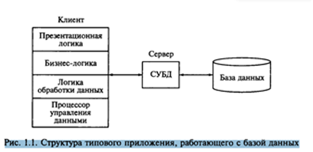
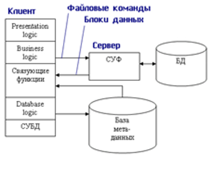
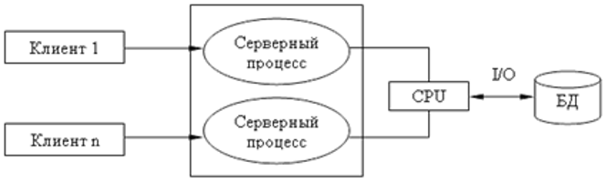
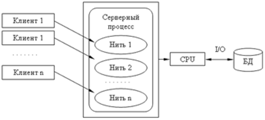
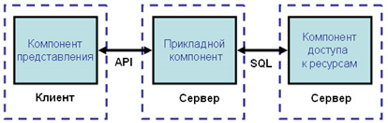
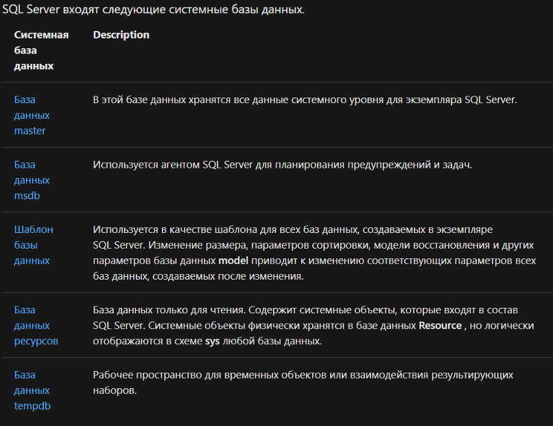
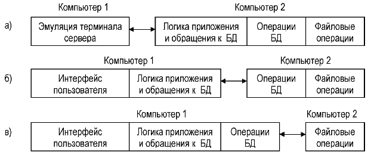
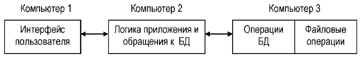
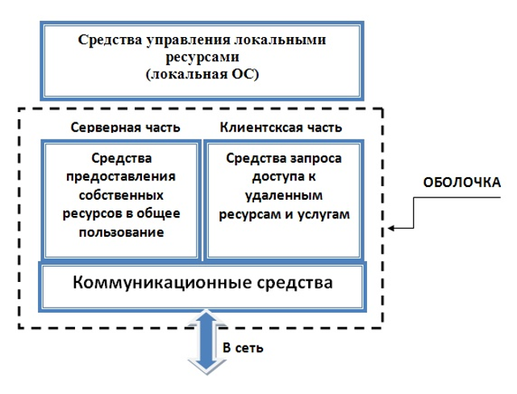

Спонсор: Microsoft
Вы можете этот курс.
Нижегородский государственный университет им. Н.И.Лобачевского
Опубликован: 04.06.2009 | Доступ: свободный | Студентов: 14805 / 4286 | Оценка: 4.34 / 4.09 | Длительность: 14:55:00
Тема: Базы данных
Специальности: Администратор баз данных
Теги:
Лекция 3:
Различные архитектурные решения, используемые при реализации многопользовательских СУБД. Краткий обзор СУБД
3.3. Технология "клиент – сервер"
Использование технологии " клиент – сервер " предполагает наличие некоторого количества компьютеров, объединенных в сеть, один из которых выполняет особые управляющие функции (является сервером сети).
Так, архитектура " клиент – сервер " разделяет функции приложения пользователя (называемого клиентом) и сервера. Приложение-клиент формирует запрос к серверу, на котором расположена БД, на структурном языке запросов SQL (Structured Query Language), являющемся промышленным стандартом в мире реляционных БД. Удаленный сервер принимает запрос и переадресует его SQL-серверу БД. SQL-сервер – специальная программа, управляющая удаленной базой данных. SQL-сервер обеспечивает интерпретацию запроса, его выполнение в базе данных, формирование результата выполнения запроса и выдачу его приложению-клиенту. При этом ресурсы клиентского компьютера не участвуют в физическом выполнении запроса; клиентский компьютер лишь отсылает запрос к серверной БД и получает результат, после чего интерпретирует его необходимым образом и представляет пользователю. Так как клиентскому приложению посылается результат выполнения запроса, по сети "путешествуют" только те данные, которые необходимы клиенту. В итоге снижается нагрузка на сеть. Поскольку выполнение запроса происходит там же, где хранятся данные (на сервере), нет необходимости в пересылке больших пакетов данных. Кроме того, SQL-сервер, если это возможно, оптимизирует полученный запрос таким образом, чтобы он был выполнен в минимальное время с наименьшими накладными расходами [ [ 3.2 ] , [ 3.3 ] ]. Архитектура системы представлена на рис. 3.3.
Все это повышает быстродействие системы и снижает время ожидания результата запроса. При выполнении запросов сервером существенно повышается степень безопасности данных, поскольку правила целостности данных определяются в базе данных на сервере и являются едиными для всех приложений, использующих эту БД. Таким образом, исключается возможность определения противоречивых правил поддержания целостности. Мощный аппарат транзакций, поддерживаемый SQL-серверами, позволяет исключить одновременное изменение одних и тех же данных различными пользователями и предоставляет возможность откатов к первоначальным значениям при внесении в БД изменений, закончившихся аварийно [ [ 3.2 ] , [ 3.3 ] ].

Итак, в результате работа построена следующим образом:
- База данных в виде набора файлов находится на жестком диске специально выделенного компьютера (сервера сети).
- СУБД располагается также на сервере сети.
- Существует локальная сеть, состоящая из клиентских компьютеров, на каждом из которых установлено клиентское приложение для работы с БД.
- На каждом из клиентских компьютеров пользователи имеют возможность запустить приложение. Используя предоставляемый приложением пользовательский интерфейс, он инициирует обращение к СУБД, расположенной на сервере, на выборку/обновление информации. Для общения используется специальный язык запросов SQL, т.е. по сети от клиента к серверу передается лишь текст запроса.
- СУБД инкапсулирует внутри себя все сведения о физической структуре БД, расположенной на сервере.
- СУБД инициирует обращения к данным, находящимся на сервере, в результате которых на сервере осуществляется вся обработка данных и лишь результат выполнения запроса копируется на клиентский компьютер. Таким образом СУБД возвращает результат в приложение.
- Приложение, используя пользовательский интерфейс, отображает результат выполнения запросов.
Рассмотрим, как выглядит разграничение функций между сервером и клиентом.
- Функции приложения-клиента:
- Посылка запросов серверу.
- Интерпретация результатов запросов, полученных от сервера.
- Представление результатов пользователю в некоторой форме (интерфейс пользователя).
- Функции серверной части:
- Прием запросов от приложений-клиентов.
- Интерпретация запросов.
- Оптимизация и выполнение запросов к БД.
- Отправка результатов приложению-клиенту.
- Обеспечение системы безопасности и разграничение доступа.
- Управление целостностью БД.
- Реализация стабильности многопользовательского режима работы.
1. Архитектура клиент – сервер в технологии управления удаленными базами данных. Вычислительная модель клиент-сервер исходно связана с появлением открытых систем в 1990-х гг. Термин клиент—сервер применялся к архитектуре программного обеспечения, состоящего из двух процессов обработки информации: клиентского и серверного. Клиентский процесс запрашивал некоторые услуги, а серверный — обеспечивал их выполнение. При этом предполагалось, что один серверный процесс может обслужить множество клиентских процессов. Учитывая, что аппаратная реализация этой модели управления базами данных связана с созданием локальных вычислительных сетей предприятия, такую организацию процесса обработки информации называют архитектурой клиент—сервер. Основной принцип модели клиент—сервер применительно к технологии управления базами данных заключается в разделении функций стандартного интерактивного приложения на пять групп, имеющих различную природу: • функции ввода и отображения данных (Presentation Logic); • прикладные функции, определяющие основные алгоритмы решения задач приложения (Business Logic); • функции обработки данных внутри приложения (DataBase Logic); • функции управления информационными ресурсами (DataBase Manager System); • служебные функции, играющие роль связок между функциями первых четырех групп. Структура типового приложения, работающего с базой данных в архитектуре клиент—сервер, приведена рис. 1.1. .
Как видно из рис. 1.1, клиентская часть приложения включает в себя следующие части: Презентационная логика (Presentation Logic) как часть приложения определяется тем, что пользователь видит на своем экране, что приложение работает. Сюда относятся все - интерфейсные экранные формы, которые пользователь видит или заполняет в ходе работы приложения, а также все то, что выводится пользователю на экран в качестве результатов решения некоторых промежуточных задач либо как справочная информация. Бизнес-логика, или логика собственно приложений (Business Processing Logic), — это часть кода приложения, которая определяет собственно алгоритмы решения конкретных его задач. Обычно этот код записывается с использованием различных языков программирования, таких как С, С++, Visual Basic и др. Логика обработки данных (Data Manipulation Logic) — это часть кода приложения, которая непосредственно связана с обработкой данных внутри него. Данными управляет собственно СУБД, а для обеспечения доступа к ним используется язык SQL. Процессор управления данными (DataBase Manager System Processing) — это собственно СУБД, которая обеспечивает хранение и управление базами данных. В идеале функции СУБД должны быть скрыты от бизнес-логики приложения, однако при рассмотрении архитектуры приложения мы выделим их в отдельную его часть. В централизованной архитектуре (Host-Based Processing) указанные части приложения располагаются в единой среде и комбинируются внутри одной исполняемой программы. В децентрализованной архитектуре эти части приложения могут быть по-разному распределены между серверным и клиентским процессами. В зависимости от характера распределений задач можно выделить следующие их модели: • распределенное представление (Distribution Presentation); • удаленное представление (Remote Presentation); • распределенная бизнес-логика (Remote Business Logic); • удаленное управление данными (Remote Data Management); • •распределенное управление данными (Distributed Data Management). Эта условная классификации показывает, как могут быть распределены отдельные задачи между серверным и клиентскими процессами.
2. Модель удаленного управления данными, или модель файлового сервера. Модель удаленного управления данными также называется моделью файлового сервера (File Server, FS). В этой модели презентационная логика и бизнес-логика располагаются на клиенте. На сервере располагаются файлы с данными и поддерживается доступ к файлам. Функции управления информационными ресурсами в этой модели находятся на клиенте. Распределение функций в этой модели представлено на рис. 10.4. В этой модели файлы базы данных хранятся на сервере, клиент обращается к серверу с файловыми командами, а механизм управления всеми информационными ресурсами, собственно база мета-данных, находится на клиенте.
Достоинства этой модели в том, что мы уже имеем разделение монопольного приложения на два взаимодействующих процесса. При этом сервер (серверный процесс) может обслуживать множество клиентов, которые обращаются к нему с запросами. Собственно, СУБД должна находиться в этой модели на клиенте. Алгоритм выполнения запроса клиента: Запрос клиента формулируется в командах ЯМД. СУБД переводит этот запрос в последовательность файловых команд. Каждая файловая команда вызывает перекачку блока информации на клиента, далее на клиенте СУБД анализирует полученную информацию, и если в полученном блоке не содержится ответ на запрос, то принимается решение о перекачке следующего блока информации и т. д. Перекачка информации с сервера на клиент производится до тех пор, пока не будет получен ответ на запрос клиента. Недостатки: ● высокий сетевой трафик, который связан с передачей по сети множества блоков и файлов, необходимых приложению; ● узкий спектр операций манипулирования с данными, который определяется только файловыми командами; ● отсутствие адекватных средств безопасности доступа к данным (защита только на уровне файловой системы). Модель удаленного доступа к данным основана на учете специфики размещения и физического манипулирования данных во внешней памяти для реляционных СУБД. В RDA-модели компонент доступа к данным в СУБД полностью отделен от двух других компонентов (компонента представления и прикладного компонента) и размещается на сервере системы. Компонент доступа к данным реализуется в виде самостоятельной программной части СУБД, называемой SQL-сервером, и инсталлируется на вычислительной установке сервера системы. Функции SQL-сервера ограничиваются низкоуровневыми операциями по организации, размещению, хранению и манипулированию данными в дисковой памяти сервера. Иначе говоря, SQL-сервер играет роль машины данных. Модели серверов баз данных. Недостатки: • для обслуживания большого числа клиентов на сервере должно быть запущено большое количество одновременно работающих серверных процессов, а это резко повышает требование к ресурсам ЭВМ, на котором запускались все серверные процессы. • каждый серверный процесс в этой модели запускается как независимый, поэтому если один клиент сформировал запрос, который был выполнен другим серверным процессом для другого клиента, то запрос, тем не менее, выполняется повторно. • в этой модели сложно обеспечить взаимодействие серверных процессов. Взаимодействие серверных и клиентских процессов в модели 1:1.
Вышеперечисленные недостатки устраняются в модели (архитектуре) "систем с выделенным сервером", который способен обрабатывать запросы от многих клиентов. Сервер единственный обладает монополией на управление данными и взаимодействует одновременно со многими клиентами. Логически каждый клиент связан с сервером отдельной нитью (tread), или потоком, по которому пересылаются запросы. Такая архитектура получила название многопотоковой односерверной. Достоинство: уменьшается нагрузка на ОС, возникающая при работе большого числа пользователей. Многопотоковая односерверная архитектура.
Недостатки: Т.к. сервер может выполняться только на одном процессоре, возникает ограничение на применение СУБД для мультипроцессорных платформ. Например, если компьютер имеет 4 процессора, то СУБД с одним сервером использует только один из них, не загружая оставшиеся 3.
3. Модель сервера баз данных. Модель сервера приложений. Модель сервера баз данных Для того чтобы избавиться от недостатков модели удаленного доступа, должны быть соблюдены следующие условия: • Необходимо, чтобы БД в каждый момент отражала текущее состояние предметной области, которое определяется не только собственно данными, но и связями между объектами данных, т. е. данные, которые хранятся в БД, в каждый момент времени должны быть непротиворечивыми. • БД должна отражать некоторые правила предметной области, законы, по которым она функционирует (business rules). Например, завод может нормально работать только в том случае, если на складе имеется некоторый достаточный запас (страховой запас) деталей определенной номенклатуры: деталь может быть запущена в производство только в том случае, если на складе имеется в наличии достаточно материала для ее изготовления, и т. д. • Необходим постоянный контроль за состоянием БД, отслеживание всех изменений и адекватная реакция на них: например, при достижении некоторым измеряемым параметром критического значения должно произойти отключение определенной аппаратуры; при уменьшении товарного запаса ниже допустимой нормы должна быть сформирована заявка конкретному поставщику на поставку соответствующего товара. • Необходимо, чтобы возникновение некоторой ситуации в БД четко и оперативно влияло на ход выполнения прикладной задачи. • Одной из важнейших проблем СУБД является контроль типов данных. В настоящий момент СУБД контролирует синтаксически только стандартно-допустимые типы данных, т. е. такие, которые определены в DDL (data definition language) — языке описания данных, который является частью SQL. Однако в реальных предметных областях у нас действуют данные, которые несут в себе еще и семантическую составляющую, например, координаты объектов или единицы различных метрик, так, рабочая неделя в отличие от реальной имеет сразу после пятницы понедельник. Централизованный контроль в модели сервера баз данных выполняется с использованием механизма триггеров. Триггеры также являются частью БД. Термин «триггер» взят из электроники и семантически очень точно характеризует механизм отслеживания специальных событий, которые связаны с состоянием БД. Триггер в БД является как бы некоторым тумблером, который срабатывает при возникновении определенного события в БД. Ядро СУБД проводит мониторинг всех событий, которые вызывают созданные и описанные триггеры в БД, и при возникновении соответствующего события сервер запускает соответствующий триггер. Каждый триггер представляет собой также некоторую программу, которая выполняется над базой данных. Триггеры могут вызывать хранимые процедуры. Механизм использования триггеров предполагает, что при срабатывании одного триггера могут возникнуть события, которые вызовут срабатывание других триггеров. Этот мощный инструмент требует тонкого и согласованного применения, чтобы не получился бесконечный цикл срабатывания триггеров. В данной модели сервер является активным, потому что не только клиент, но и сам сервер, используя механизм триггеров, может быть инициатором обработки данных в БД. И хранимые процедуры, и триггеры хранятся в словаре БД, они могут быть использованы несколькими клиентами, что существенно уменьшает дублирование алгоритмов обработки данных в разных клиентских приложениях. Для написания хранимых процедур и триггеров используется расширение стандартного языка SQL, так называемый встроенный SQL. Встроенный SQL мы рассмотрим далее. Недостатком данной модели является очень большая загрузка сервера. Действительно, сервер обслуживает множество клиентов и выполняет следующие функции: • осуществляет мониторинг событий, связанных с описанными триггерами; • обеспечивает автоматическое срабатывание триггеров при возникновении связанных с ними событий; • обеспечивает исполнение внутренней программы каждого триггера; • запускает хранимые процедуры по запросам пользователей; • запускает хранимые процедуры из триггеров; • возвращает требуемые данные клиенту; • обеспечивает все функции СУБД: доступ к данным, контроль и поддержку целостности данных в БД, контроль доступа, обеспечение корректной параллельной работы всех пользователей с единой БД. Если мы переложили на сервер большую часть бизнес-логики приложений, то требования к клиентам в этой модели резко уменьшаются. Иногда такую модель называют моделью с «тонким клиентом» в отличие от предыдущих моделей, где на клиента возлагались гораздо более серьезные задачи. Эти модели называются моделями с «толстым клиентом». Модель сервера приложений является расширением двухуровневой модели и в ней вводится дополнительный промежуточный уровень между клиентом и сервером.
В этой модели компоненты приложения делятся между тремя исполнителями: • Клиент обеспечивает логику представления, включая графический пользовательский интерфейс, локальные редакторы; клиент может запускать локальный код приложения клиента, который может содержать обращения к локальной БД, расположенной на компьютере-клиенте. Клиент исполняет коммуникационные функции front-end части приложения, которые обеспечивают клиенту доступ в локальную или глобальную сеть. Кроме того, реализация взаимодействия между клиентом и сервером может включать в себя управление распределенными транзакциями, что соответствует тем случаям, когда клиент также является клиентом менеджера распределенных транзакций. • Серверы приложений составляют новый промежуточный уровень архитектуры. Они спроектированы как исполнения общих незагружаемых функций для клиентов. Серверы приложений поддерживают функции клиентов как частей взаимодействующих рабочих групп, поддерживают сетевую доменную операционную среду, хранят и исполняют наиболее общие правила бизнес-логики, поддерживают каталоги с данными, обеспечивают обмен сообщениями и поддержку запросов, особенно в распределенных транзакциях. • Серверы баз данных в этой модели занимаются исключительно функциями СУБД: обеспечивают функции создания и ведения БД, поддерживают целостность реляционной БД, обеспечивают функции хранилищ данных (warehouse services). Кроме того, на них возлагаются функции создания резервных копий БД и восстановления БД после сбоев, управления выполнением транзакций и поддержки устаревших (унаследованных) приложений (legacy application). Отметим, что эта модель обладает большей гибкостью, чем двухуровневые модели. Наиболее заметны преимущества модели сервера приложений в тех случаях, когда клиенты выполняют сложные аналитические расчеты над базой данных, которые относятся к области OLAP-приложений (On-line analytical processing). В этой модели большая часть бизнес-логики клиента изолирована от возможностей встроенного SQL, реализованного в конкретной СУБД, и может быть выполнена на стандартных языках программирования, таких как C, C++, SmallTalk, Cobol. Это повышает переносимость системы, ее масштабируемость. Функции промежуточных серверов могут быть в этой модели распределены в рамках глобальных транзакций путем поддержки XA-протокола (X/Open transaction interface protocol), который поддерживается большинством поставщиков СУБД.
4. Основные свойства распределенных баз данных. Распределенная база данных (Distributed Database – DDB) – это совокупность логически взаимосвязанных баз данных, распределенных в компьютерной сети. В распределенных системах база данных состоит из нескольких частей, которые называются фрагментами базы данных. С точки зрения пользователей распределенная база данных выглядит как обычная настольная база данных, компоненты которой могут находиться на различных компьютерах (узлах) локальной сети предприятия. В идеале для распределенных баз данных должны быть характерны следующие свойства: ·локальная автономия (local autonomy) — свойство, означающее, что управление данными на каждом из узлов распределенной системы выполняется локально. База данных, расположенная на одном из узлов, является неотъемлемым компонентом распределенной системы. Будучи фрагментом общего пространства данных, она в то же время функционирует как полноценная локальная база данных, управление которой выполняется локально и независимо от других узлов системы; ·независимость узлов (no reliance on central site) — свойство, означающее, что в идеальной системе все узлы равноправны и независимы, а расположенные на них базы являются равноправными поставщиками данных в общее пространство данных. База данных на каждом из узлов самодостаточна, т. е. она включает в себя полный собственный словарь данных и полностью защищена от несанкционированного доступа; ·непрерывность операций (continuous operation) — свойство, которое можно трактовать как возможность непрерывного доступа к данным (24 ч в сутки или семь дней в неделю) в рамках DDB независимо от их расположения и независимо от операций, выполняемых на локальных узлах. Это свойство можно выразить следующим образом: данные доступны всегда, а операции над ними выполняются непрерывно; ·прозрачность расположения (location independence) — свойство, означающее полную прозрачность расположения данных. Пользователь, обращающийся к DDB, ничего не должен знать о реальном (физическом) размещении данных в узлах информационной системы. Все операции с данными выполняются без учета их местонахождения. Транспортировка запросов к базам данных осуществляется встроенными системными средствами; ·прозрачность фрагментации (fragmentation independence) — свойство, которое трактуется как возможность распределенного размещения данных, логически представляющих собой единое целое. Существует фрагментация двух типов: горизонтальная и вертикальная. Первая означает хранение строк одной таблицы на различных узлах (фактически хранение строк одной логической таблицы в нескольких идентичных физических таблицах на различных узлах), а вторая — распределение столбцов логической таблицы по нескольким узлам; ·прозрачность тиражирования (replication independence) (асинхронного в общем случае процесса переноса изменений объектов исходной базы данных в базы, расположенные на других узлах распределенной системы) — свойство, означающее возможность переноса изменений между базами данных средствами, невидимыми пользователю распределенной системы, или, что тиражирование возможно и достигается внутри системными средствами; ·возможность обработки распределенных запросов (distributed query processing) — свойство DDB, которое трактуется как возможность выполнения операций выборки информации из распределенной базы данных, сформулированных в рамках обычного запроса на языке SQL. Это означает, что операцию выборки из DDB можно сформулировать с помощью тех же языковых средств, что и операцию в локальной базе данных; ·возможность обработки распределенных транзакций (distributed transaction processing) — свойство DDB, которое можно трактовать как возможность выполнения операций обновления распределенной базы данных (INSERT, UPDATE, DELETE), не разрушая целостность и согласованность данных, что достигается применением двухфазового (или двухфазного) протокола фиксации транзакций (two-phase commit protocol), ставшего фактическим стандартом обработки распределенных транзакций. Использование этого протокола гарантирует согласованное изменение данных на нескольких узлах в рамках распределенной (или глобальной) транзакции; ·независимость от оборудования (hardware independence) — свойство, означающее, что в качестве узлов распределенной системы могут выступать компьютеры любых моделей и производителей; ·независимость от операционных систем (operationg system independence) — свойство, вытекающее из предыдущего свойства и означающее многообразие операционных систем, управляющих узлами распределенной системы; ·прозрачность сети (network independence) — свойство, означающее, что в распределенной системе возможны любые сетевые протоколы, т.е. доступ к любым базам данных может осуществляться по сети и спектр поддерживаемых конкретной СУБД сетевых протоколов не должен быть ограничением системы с распределенными базами данных; ·независимость от баз данных (database independence) — свойство, означающее, что в распределенной системе могут сосуществовать СУБД различных производителей, а также возможны операции поиска и обновления в базах данных различных моделей и форматов. Рассмотренные свойства во многом связаны с технологиями, осуществляющими доступ и обработку информации в удаленных базах данных.
5. Отличие двухуровневой клиент – серверной схемы организации баз данных от трехуровневой. Различаются двухуровневые, трехуровневые и многоуровневые структуры «клиент — сервер». Двухуровневые структуры «клиент — сервер» подразделяются на два типа: «файл-сервер» и «сервер базы данных» (рис. 4.3). На рабочей станции типа «файл — сервер» выполняется содержательная обработка данных. На файловом сервере находятся различные файлы. Достоинство структуры типа «файл — сервер» заключается в обеспечении высокого уровня защиты данных от несанкционированного доступа. Недостатки заключаются в следующем: обмен информацией осуществляется на уровне файлов; часто возникает перегрузка сети; предъявляются высокие требования к техническому оснащению рабочих станций. На рабочей станции типа «сервер базы данных» также выполняется содержательная обработка данных, но на сервере располагается взаимосвязанная информация в виде базы данных. Достоинствами структуры «сервер базы данных» являются использование взаимосвязанной информации и существенное уменьшение нагрузки сети. К недостаткам структуры этого типа относится наличие высоких требований к техническому и программному обеспечению как рабочих станций, так и сервера базы данных, который становится центральным звеном и определяет ее надежность. В трехуровневом «клиент — сервере» (рис. 4.4) выделен сервер приложений, на котором выполняется содержательная обработка данных. Достоинства данной структуры заключаются в использовании взаимосвязанной информации, обеспечении эффективного использования приложений общего пользования многими клиентами; снижении требований к техническому и программному обеспечению рабочих станций. Недостаток состоит в том, что предъявляются высокие требования к техническому и программному обеспечению сервера приложений и сервера базы данных. Если серверов приложений и баз данных в сети несколько, структура становится многоуровневой.
6. Принципы разработки и эксплуатации систем управления удаленными базами данных. Система управления базами данных (СУБД) представляет собой комплекс языковых и программных средств, которые обеспечивают управление созданием и использованием баз данных. CALS-технологии - это современное направление развития информационного обеспечения производственных и бизнес-процессов, направленное на создание единого информационного пространства, основу которого составляют удаленные интегрированные базы данных. В России принят аналог CALS — информационная поддержка жизненного цикла изделий (ИПИ). Основу ИПИ составляет интегрированная информационная среда, или единое информационное пространство. ИИС — это совокупность удаленных распределенных баз данных, содержащих сведения об изделиях, производственной среде, ресурсах и процессах предприятия, обеспечивающая корректность, актуальность, сохранность и доступность данных тем субъектам производственно-хозяйственной деятельности, участвующим в осуществлении жизненного цикла изделия, которым это необходимо и разрешено. Принципы разработки многопользовательских баз данных заключаются в соблюдении двух обязательных условий: Ø Системный подход. Системный подход к разработке информационной системы означает, что такая система рассматривается как «большая система», состоящая из некоторого множества взаимосвязанных и взаимодействующих между собой элементов. При проектировании информационных систем необходимо: учитывать интересы всех потенциальных пользователей системы; использовать модульный принцип разработки и внедрения; использовать принцип учета интересов всех потенциальных пользователей системы. Принцип учета интересов всех потенциальных пользователей системы определяет следующий порядок разработки БД: 1. Установить, каким специалистам и в каких подразделения предприятия необходима информация о конкретном информационном объекте. 2. Установить признаки описания объектов различными пользователями. 3. Установить общий состав признаков объектов одного класса. Ø Стандартизация. Стандартизация разработки информационных систем, включает в себя следующие аспекты: · информационный; · программный; · аппаратный. Стандартизация информационного обеспечения обусловлена принципами компьютерной обработки символьной информации, при которой объекты баз данных должны однозначно распознаваться компьютером. Применительно к текстовой информации этот аспект разработки БД означает, что четкие правила идентификации (грамматические правила написания) должны быть установлены для всех информационных объектов. Так, установив название инструмента для механической обработки детали резец расточной, недопустимо использовать никакой другой способ его обозначения, т.е. название «расточной резец» не идентично названию «резец расточной». Стандартизация программного обеспечения необходима, так как при разработке многопользовательских, удаленных друг от друга систем данные одной системы должны обрабатываться программным обеспечением другой системы. Стандартизация аппаратного обеспечения обусловлена необходимостью снижения затрат на эксплуатацию компьютерной техники. Эксплуатация и сопровождение - это этап, на котором полагается непрерывное наблюдение за разработанной системой в процессе ее функционирования. Контроль качества работы системы осуществляет администратор базы данных. Процесс контроля качества системы должен полностью соответствовать действующим на предприятии методам, системы менеджмента качеством, отвечающим требованиям стандартов ISO 1900:2000.
7. Этапы проектирования многопользовательских баз данных. Базы данных могут разрабатываться практически для всех задач управления производством: 1. Поставка материалов и комплектующих изделий 2. Проектирование конструкции новых изделий 3. Оперативное календарное планирование 4. Разработка нормативной базы 5. Управление качеством выпускаемой продукции 6. Управление сбытом и пр. Проектирование БД предусматривает следующие стадии: 1. Разработка концептуальной модели многопользовательской базы данных. 2. Разработка проекта СУБД в соответствии с техническим заданием. 3. Реализация проекта и разработка технической документации. Разработка концептуальной модели многопользовательской базы данных. • определение цели создания ИИС; • установление состава пользователей БД; Это необходимо для решения следующих задач: 1. Определение классов информационных объектов, их характеристик, что определяет состав таблиц ИС; 2. Определение местоположения пользователей, что определяет архитектуру ЛВС. На данном этапе проектирования БД необходимо выполнить следующее: · разработка концептуальной модели БД; На данном этапе устанавливается оптимальный состав таблиц БД, исходя из потребностей каждого пользователя ИИС, а затем каждая таблица может быть подвергнута процедуре нормализации. · разработка технического задания на проектирование локальных СУБД; В техническом задании необходимо: 1. Обосновать выбор архитектуры ЛВС и архитектуры БД 2. Обосновать выбор программной системы для разработки СУБД 3. Разработать требования к формам выходных документов, учитывая специфику каждого пользователя 4. Разработать требования к созданию пользовательского интерфейса с учетом задач каждого пользователя 5. Разработать требования к организационному обеспечению СУБД, определить права доступа пользователей к БД и ее компонентам в процессе заполнения таблиц БД и в процессе получения информации · определение потребных трудовых и материальных ресурсов для разработки БД
8. Этапы жизненного цикла СУБД. Администрирование баз данных. 1. Планирование разработки базы данных. Планирование разработки базы данных — это подготовительные работы, включающие в себя нахождение методов и средств оптимального решения задачи, поставленной перед информационной системой. Формулирование цели создания базы данных, поиск и обоснование оптимальных методов (способов) организации СУБД в условиях конкретного предприятия 2. Определение требований к СУБД. Определение требований к СУБД зависит от области применения баз данных, состава пользователей, а следовательно, и от назначения системы. Определение состава пользователей и разграничение задач между ними в процессе проектирования и эксплуатации СУБД 3. Разработка единого описания характеристик объекта базы данных. Сбор и анализ требований к описанию объектов базы данных всех потенциальных пользователей информационной системы 4. Разработка и исследование моделей проекта СУБД. Концептуальное моделирование — это процесс создания информационной модели (базы данных), не зависящей от ее физической реализации. В общем случае это определение необходимого состава таблиц базы данных исходя из установленного состава пользователей. Логическое моделирование предполагает разработку и установление связей между таблицами базы данных, а также их модификацию на основе принципов нормализации. При разработке логической модели учитывается конкретная СУБД. Физическое моделирование — это описание способов хранения базы данных на запоминающих устройствах. Концептуальное, логическое и физическое моделирование базы данных 5. Обоснование и выбор программной системы для разработки баз данных. Обоснование и выбор программной системы для разработки баз данных — это этап, на котором решается задача выбора такой программной системы, которая обеспечивала бы минимальные трудовые и материальные затраты при разработке и эксплуатации информационной системы Оценка ожидаемых затрат на разработку и эксплуатацию базы данных в условиях предприятия 6. Разработка «эскизного проекта» — прототипа базы данных (этап необязательный). Разработка «эскизного проекта — прототипа баз данных позволяет проверить разработанные информационные модели баз данных, на основе которых можно с уверенностью составить техническое задание программистам для разработки приложения. Данный этап должен выполняться либо непосредственно специалистами конкретной предметной области, либо под их руководством. Создание модели базы данных средствами визуального проектирования. 7. Разработка приложения. Разработка приложения — это этап, на котором одним из обязательных условий является необходимость обеспечения быстрой работы с удаленными базами данных, в том числе через глобальную сеть. Серверная часть СУБД: разработка объектов базы данных (структуры таблиц базы данных и связей между ними, обеспечивающих целостность данных) и физическая реализация таблиц БД в конкретной СУБД Клиентская часть СУБД: разработка запросов и отчетов в соответствии с решаемыми задачами, сценария и форм пользовательского интерфейса, программ управления и доступа к удаленным базам данных 8. Реализация СУБД. Создание внешнего концептуального и внутреннего определений базы данных и прикладных программ 9. Загрузка данных. Заполнение информацией таблиц баз данных 10. Тестирование системы. Проверка работы баз данных и устранение возникающих ошибок в работе приложения 11. Эксплуатация и сопровождение системы. Разработка организационных мероприятий по внедрению системы, постоянное наблюдение за ее работой и при необходимости внесение изменений в разработанное приложение
В практике разработки и управления базами данных выделяют две функции: администрирование данных и администрирование баз данных. Соответственно предусматривают и две должности: администратор данных и администратор баз данных. Администрирование данных подразумевает управление информационными ресурсами, разработку и внедрение стандартов на информационное обеспечение, концептуальное и логическое проектирование баз данных. Перечень задач, возлагаемых на администратора данных: · выбор рациональных инструментальных средств разработки баз данных; · участие в разработке корпоративных стратегий создания информационной системы с учетом развития информационных технологий, включая разработку соответствующей технической документации; · экспертная оценка осуществимости проектов и планирование процесса создания базы данных; · участие в разработке корпоративной модели данных; · определение требований организации к используемым данным и разработка словаря данных; · участие в разработке методик сбора данных и выбор формата их представления; · оценка существующих и ожидаемых объемов данных; · определение правил доступа к данным и мер безопасности, соответствующих правовым нормам и внутренним требованиям организации; · концептуальное и логическое проектирование базы данных; · взаимодействие с разработчиками приложений в целях обеспечения существующих требований конкретного предприятия; · разработка должностных инструкций и обучение пользователей баз данных; · взаимодействие со службами системы управления качеством в части анализа причин нарушения целостности БД или потери информации; · разработка и выбор методов и средств эффективной защиты данных в условиях конкретного предприятия. Администрирование баз данных подразумевает управление физической реализацией разработанной информационной системы. Деятельность администратора баз данных является в большей мере технической, предусматривающей знание особенностей конкретных СУБД и операционных систем. Перечень задач администратора баз данных: · участие в оценке и выборе целевой СУБД на этапах проектирования баз данных; · физическое проектирование базы данных; · реализация физического проекта базы данных в среде целевой СУБД; · определение и реализация требований по защите и поддержке целостности данных; · взаимодействие с разработчиками приложений баз данных; · разработка стратегии тестирования баз данных; · обучение пользователей при работе с базами данных в ЛВС предприятия; · сдача в эксплуатацию готового приложения базы данных, контроль текущей производительности системы и соответствующая настройка базы данных; · регулярное резервное копирование; · разработка требуемых механизмов и процедур восстановления информации в базах данных; · обеспечение полноты необходимой документации для работы с базами данных, получаемых как от внешних разработчиков, так и от специалистов внутри организации; · поддержка и обеспечение работоспособности используемого программного и аппаратного обеспечения.
9. Применение СУБД Access для разработки проекта удаленных баз данных. Одна из самых распространенных СУБД — Microsoft Access, которая изначально разрабатывалась для проектирования «настольных» БД, в настоящее время является эффективной программной средой для формирования проектов удаленных баз данных в архитектурах файл —сервер и клиент—сервер. Фирма Microsoft учла огромный спрос на методы и средства проектирования многопользовательских баз данных, и последние версии СУБД Access (2000 и 2003) имеют средства для ее интеграции с корпоративными СУБД — SQL Server и Oracle. В СУБД Microsoft Access предоставляется выбор из двух технологий (машин) баз данных (data engines): первоначальной технологии Jet и новой — Microsoft Data Engine (MSDE), совместимой с Microsoft BackOffice SQL Server (продуктом компании Microsoft для администрирования локальных корпоративных сетей). Машина базы данных Jet хранит все данные приложения (таблицы, индексы, запросы, формы и отчеты) в одном файле базы данных с расширением .mdb, организованным с использованием ISAM (Indexed Sequential Access Method — индексно-последова-тельный метод доступа). Основой MSDE является та же машина базы данных, что и в СУБД Microsoft SQL Server, предоставляющая пользователям возможность писать масштабируемые приложения на компьютере с системой Wndows 95, которые затем можно перенести в высокопроизводительные многопроцессорные кластеры (группы компьютеров), работающие под управлением системы Windows NT. Машина MSDE предоставляет также процедуру преобразования данных, позволяющую пользователям впоследствии наращивать вычислительные возможности до уровня SQL Server. Microsoft Access, как и SQL Server, делит данные, хранящиеся в ее табличных структурах, на страницы данных размером в 2 Кбайт, что соответствует размеру стандартного кластера файла жесткого диска в операционной системе DOS. Каждая такая страница содержит одну или несколько записей. При этом запись не может занимать больше одной страницы, хотя записи типа Memo (поля примечаний) и поля объектов OLE могут храниться на отдельных страницах. СУБД Access в качестве стандартного способа хранения записей использует запись переменной длины, а упорядочивает их с помощью индекса первичного ключа. При использовании формата хранения записи с переменной длиной каждая запись занимает только пространство, необходимое для хранения ее фактических данных. Для создания списка связей страниц данных к каждой странице добавляется заголовок. При этом заголовок содержит два указателя: на предыдущую и следующую страницы. Одним из преимуществ страниц данных с собственными заголовками является то, что они могут храниться в индексированном виде (в соответствии с методом доступа ISAM), т.е. в случае необходимости изменяют только указатели в заголовке страницы, а не структуру файла. Microsoft Access обеспечивает четыре основных многопользовательских способа работы с базой данных в локальных вычислительных сетях предприятий: • реализация файл —сервер. Базу данных Access располагают в сети таким образом, чтобы пользователи могли использовать ее совместно. В этом случае на каждой рабочей станции эксплуатируется отдельная копия приложения и становится эффективным использование доступа к данным с помощью технологии ADO .NET, • реализация клиент —сервер. В последних версиях СУБД Access (начиная с Access 2000) предусмотрена возможность создания файлов с расширением .adp, в которых могут храниться только клиентские части приложения: формы, отчеты, макросы и модули VBA. С помощью технологии OLE DB этот файл может интегрироваться с серверной частью приложения — таблицами удаленной базы данных, хранящимися в SQL Server, • реализация на основе репликации баз данных Репликация предполагает создание одной или нескольких копий, называемых точными копиями (replica) первоначальной базы данных — проектного эталона (design master). Проектный эталон и его точные копии называют набором точных копий (replica set). При данном способе реализации любые изменения в объектах и данных передаются всем элементам набора точных копий, что происходит благодаря выполнению так называемого процесса синхронизации. При этом изменения в проекте объектов можно делать только в проектном эталоне, а изменения в данные можно вносить из любого элемента набора точных копий, • реализация баз данных на основе Web-технологий. В этом случае броузер как средство навигации и просмотра отображает одну или несколько страниц доступа, которые динамически связываются с совместно используемой базой данных Access или SQL Server.
10. Назначение языка SQL. Операторы манипулирования данными. Любой язык разработки и управления базами данных должен предоставлять пользователю определенные возможности: - создание баз данных и таблиц с полным описанием их структуры; - выполнение основных операций манипулирования данными, таких как вставка, модификация и удаление данных из таблиц; - выполнение простых и сложных запросов. При этом язык работы с базами данных должен решать все указанные задачи при минимальных трудовых и материальных затратах. Кроме того, язык разработки и управления базами данных дол-; жен отвечать некоторому заданному стандарту, что позволит использовать один и тот же синтаксис и одинаковую структуру команд при переходе от одной СУБД к другой. Язык SQL отвечает практически всем этим требованиям. SQL является примером языка преобразования данных, или же языка, предназначенного для работы с таблицами в целях преобразования входных данных к требуемому выходному виду. Язык SQL, определенный стандартом ISO, включает в себя два основных компонента: - язык DDL (Data Definition Language), предназначенный для определения структур базы данных и управления доступом к данным; - язык DML (DataMunipulation Language), предназначенный для выборки и обновления данных. Язык SQL — это специальный и пока единственный стандартный язык разработки и управления (манипулирования) реляционными базами данных, составляющий основу всех современных СУБД: Fox Pro, Microsoft Access, Oracle, SQL-Server, InterBase и др. Для манипулирования данными применяются следующие операторы DML языка SQL: · SELECT — выборка данных из базы; · INSERT — вставка данных в таблицу; · UPDATE — обновление данных в таблице; · DELETE — удаление данных из таблицы. SELECT — один из основных операторов при выборе информации из таблиц баз данных. В общем виде синтаксис инструкции SELECT можно описать следующим образом: SELECT [ALL/DISTINCT] (Список полей таблицы или запроса) FROM (Список таблиц или запросов, на основе которых формируется запрос) [WHERE (Условия отбора данных)] [GROUP BY (Список полей, выводимых в результате выполнения запроса] [HAVING (Условия для группирования данных в запросе] [ORDER BY (Список полей, по которым упорядочивается вывод данных в запросе] В рассмотренной структуре инструкции SELECT: ALL — ключевое слово, которое означает, что в результирующий набор записей включаются все записи таблицы или запроса, которые удовлетворяют условиям запроса; DISTINCT — ключевое слово, которое означает, что в результирующий набор записей не включаются повторяющиеся записи таблицы или запроса. Ключевые слова могут отсутствовать в запросе. Операторы определения данных (DDL) Оператор Действие CREATE TABLE Создает новую таблицу БД DROP TABLE Удаляет таблицу из БД ALTER TABLE Изменяет структуру существующей таблицы или ограничения целостности, задаваемые для данной таблицы CREATE VIEW Создает виртуальную таблицу, соответствующую некоторому SQL-запросу ALTER VIEW Изменяет ранее созданное представление DROP VIEW Удаляет ранее созданное представление CREATE INDEX Создает индекс для некоторой таблицы в целях обеспечения быстрого доступа к ней по атрибутам, входящим в индекс DROP INDEX Удаляет ранее созданный индекс Операторы манипулирования данными (DML) Оператор Действие DELETE Удаляет одну или несколько строк, соответствующих условиям фильтрации, из базовой таблицы. Применение данного оператора согласуется с принципами поддержки целостности, поэтому он не всегда может быть выполнен корректно, даже если синтаксически записан правильно INSERT Вставляет одну строку в базовую таблицу. Допустимы модификации данного оператора, при которых сразу несколько строк могут быть перенесены из одной таблицы или запроса в базовую таблицу UPDATE Обновляет значения одного или нескольких столбцов в одной или нескольких строках, соответствующих условиям фильтрации Оператор запросов (DML) Оператор Действие SELECT Заменяет все операторы реляционной алгебры и позволяет сформировать результирующее отношение, соответствующее запросу Операторы управления действиями — транзакциями (DML) Оператор Действие CCOMMIT Завершает комплексную взаимосвязанную обработку информации, объединенную в транзакцию ROLLBACK Отменяет изменения, проведенные в ходе выполнения транзакции SAVEPOINT Сохраняет промежуточное состояние БД, т. е. помечает его для того, чтобы в дальнейшем можно было к нему вернуться Операторы администрирования данными (DDL) Оператор Действие ALTER DATABASE Изменяет набор основных объектов в базе данных и ограничений, касающихся всей базы данных ALTER DBAREA Изменяет ранее созданную область хранения ALTER PASSWORD Изменяет пароль для всей базы данных CREATE DATABASE Создает новую базу данных CREATE DBAREA Создает новую область хранения базы данных DROP DATABASE Удаляет базу данных DROP DBAREA Удаляет область хранения базы данных GRANT Предоставляет права доступа к базе данных или отдельным ее элементам REVOKE Лишает права доступа к базе данных или отдельным ее элементам Операторы управления (DDL) Оператор Действие DECLARE Определяет курсор для запроса, задает имя и определяет связанный с ним запрос к БД OPEN Открывает курсор и объект базы данных FETH Устанавливает курсор на определенную запись и считывает ее CLOSE Закрывает курсор и объект базы данных PREPARE Генерирует план выполнения запроса в соответствии с инструкцией SELECT EXECUTE Выполняет сгенерированный ранее запрос
11. Cлужбы управления базами данных SQL Server 2014. Служба – это программа или процесс, выполняющие специфические функции поддержки других программ. Когда вы запускаете SQL Server, в операционной системе Windows NT или Windows 2000 запускается служба SQL Server. Эта служба управляет файлами баз данных, исполняет операторы Transact-SQL (T-SQL), распределяет ресурсы среди пользовательских соединений, исполняющихся одновременно, проверяет непротиворечивость данных и выполняет еще много других задач. SQL Server Agent осуществляет планирование и исполнение заданий, оповещений, извещений и планов обслуживания базы данных. Без этой службы работа администратора баз данных станет гораздо более трудной, а может, вообще невозможной. Благодаря SQL Server Agent можно автоматизировать рутинные процедуры по обслуживанию базы данных. Microsoft Distributed Transaction Coordinator – это администратор транзакций (transaction manager), при помощи которого в транзакции ваших приложений можно включать данные из различных источников, в том числе данные из баз данных с удаленных компьютеров. Это значит, что при помощи одной транзакции можно обновлять данные на многих серверах, доступных через сеть.
12. Системные базы данных SQL Server 2014. 
13. Основные требования к разработке пользовательского интерфейса базы данных. Создание пользовательского приложения требует разработки так называемого дружественного интерфейса пользователя, т.е. организации диалога между пользователем и компьютером (клиентом и сервером). Основным способом организации диалога является разработка диалоговых форм, которые по назначению можно подразделить на следующие группы: • для ввода данных в таблицы; • для ввода условий обработки информации в запросы; • для автоматизации работы с объектами базы данных. Формы для ввода данных в таблицы предназначаются для такой организации процедур внесения информации, которые могли бы свести к минимуму возможность ошибок оператора. Кроме того, такие формы могут служить для проведения анализа имеющихся в таблицах данных. Формы для ввода условий обработки информации в запросы имеют назначение, аналогичное формам для ввода данных в таблицы.
14. Разработка пользовательского интерфейса средствами визуального проектирования. Разработка интерфейса пользователя связана с настройкой па нелей инструментов, созданием пользовательского меню, разработкой различных диалоговых форм. Настройка панелей инструментов и пользовательского меню. Для создания и настройки панелей инструментов, строк меню и контекстных меню, а также для установки свойств, влияющих на их вид и работу, используется диалоговое окно Настройка. Для его открытия необходимо выбрать в меню Вид команду Панели инструментов и подкоманду Настройка. Создание специальной панели инструментов для открытой базы данных производится в следующем порядке: • в меню Вид выбрать команду Панели инструментов, а затем подкоманду Настройка; • на вкладке Панели инструментов нажать кнопку [Создать]; • в поле Панель инструментов ввести необходимое имя и нажать кнопку [ОК]; • на вкладке Панели инструментов нажать кнопку [Свойства]; • установить требуемые свойства и нажать кнопку [Закрыть]. Новая панель инструментов появится за диалоговым окном Настройка. Чтобы закончить создание панели инструментов, следует вы полнить следующие действия: • добавить кнопки из диалогового окна Настройка; • переместить или скопировать кнопку с другой панели инструментов. Создание специального контекстного меню для активной базы данных. Создание специального контекстного меню производится в следующем порядке: • в меню Вид выбрать команду Панели инструментов и подкоманду Настройка; • на вкладке Панели инструментов нажать кнопку [Создать]; • в поле Панель инструментов ввести имя и нажать кнопку [ОК]; • на вкладке Панели инструментов нажать кнопку [Свойства]; • в поле со списком Тип выбрать пункт Контекстное меню; • установить или снять флажок [Настройка] и нажать кнопку [Закрыть].
15. WEB-технологии в разработке удаленных баз данных. Развитие интернет-технологий и систем управления удаленными базами данных однозначно показало высокую эффективность создания корпоративных баз данных, доступ к которым осуществляется в среде Web. Переход к интеграции СУБД со средой Web требует выполнения следующих условий: ● Обеспечение защиты конфиденциальной информации; ● Использование способов подключения удаленных пользователей, не зависящих от типов данных и программного обеспечения, в том числе с учетом развития СУБД как в настоящее время, так и в будущем; ● Обеспечение возможности взаимодействия с базой данных независимо от типа используемого броузера или Web-cepвepa; ● Обеспечение открытости архитектуры, позволяющей взаимодействовать с разнообразными системами и технологиями, доступа к данным, включая поддержку транзакций, охватывающих несколько запросов HTTP, и поддержку аутентификации на уровне сеанса и приложения; ● Приемлемая производительность; ● Минимальные требования к администрированию; ● Наличие набора высокоуровневых инструментов разработки, позволяющих относительно просто и быстро создавать, внедрять в эксплуатацию и сопровождать новые приложения. В этой архитектуре роль клиента выполняет браузер, роль сервера приложений — Web-cepeep, а сервером базы данных являются традиционные СУБД (SQLServer, Oracle и др.). Преимущества интеграции СУБД в среду Web: ● Достаточная простота реализации; ● Независимость от типов СУБД; ● Высокий уровень стандартизации процессов передачи и обработки информации; ● Возможность расширения информационных систем, в том числе при создании корпоративных связей. Эффективность взаимодействия СУБД и среды Web достигается следующими методами: ● Применением языков сценариев; ● Использованием общего шлюзового интерфейса; ● Формированием СооНе-файлов HTTP; ● Расширением возможностей Web-cepBepa.
16. Каково назначение следующих протоколов передачи информации: FTP,SMTP,Telnet, DNS,POP? FTP (File Transfer Protocol.) – протокол передачи файлов, работает на 20 и 21 порту. Предназначен для копирование файлов между компьютерами. Полностью занимает канал, пока не будет получен файл, сохраняет информацию о соединении. При сбое возможна докачка с того места, где произошел сбой. SMTP, POP3 – почтовые протоколы (электронная почта). SMTP - 25 порт, POP3 – 110 порт. Отличие: SMTP – протокол расчитанный на доставку почты до конкретного получателя, POP3 – протокол взаимодействия пользователя со своим почтовым ящиком на сервере. При использовании SMTP предполагается, что почтовый адрес указывает на компьютер конечного получателя, и на этом компьютере запущена специальная программа, которая принимает и обрабатывает почту. Однако чаще всего бывает, что почта не доставляется на компьютер каждого отдельного пользователя, а обрабатывается централизованно, на отдельном почтовом сервере. В таком случае, каждый пользователь имеет на почтовом сервере свой почтовый ящик. Почта доставляется до сервера по протоколу SMTP (конечный получатель – сервер) и помещается в почтовые ящики пользователей. Затем пользователи подключаются к своим почтовым ящикам по протоколу POP3 и забирают почту. Протокол POP3 требует полностью скачать себе всю почту, а затем разбираться: нужна она вам была или нет. Причем, чаще всего, администратор запрещает хранить копии скачанной почты на сервере (или ограничивает время хранения копий), поэтому, например, скачав почту из почтового ящика на институтский компьютер, вы полностью очистите свой почтовый ящик и, зайдя на почтовый ящик с домашнего компьютера, увидите сообщение "Писем нет". TELNET – используется для подключения и управления удаленным компьютером, работает на 23 порту. После подключения каждый символ, введенный на локальной машине, обрабатывается так, как если бы он был введен на удаленной машине. Либо может использоваться командный режим – управление удаленной машиной при помощи специальных команд. Фактически TELNET – это протокол эмуляции терминала: при помощи TELNET можно подключиться, например, на 25 порт и вручную набрать все необходимые поля заголовка письма, изменив адрес отправителя (обычно эти поля заполняются автоматически специальными почтовыми программами) и отправить само письмо. Или, например, подключиться на 80 порт и "поиграть" роль Web-браузера Internet Explorer. DNS (англ. Domain Name System — система доменных имён) - компьютерная распределённая система для получения информации о доменах. Чаще всего используется для получения IP-адреса по имени хоста (компьютера или устройства), получения информации о маршрутизации почты, обслуживающих узлах для протоколов в домене (SRV-запись). Распределённая база данных DNS поддерживается с помощью иерархии DNS-серверов, взаимодействующих по определённому протоколу. DNS обладает следующими характеристиками: Распределённость хранения информации. Каждый узел сети в обязательном порядке должен хранить только те данные, которые входят в его зону ответственности и (возможно) адреса корневых DNS-серверов. Кеширование информации. Узел может хранить некоторое количество данных не из своей зоны ответственности для уменьшения нагрузки на сеть. Иерархическая структура, в которой все узлы объединены в дерево, и каждый узел может или самостоятельно определять работу нижестоящих узлов, или делегировать (передавать) их другим узлам. Резервирование. За хранение и обслуживание своих узлов (зон) отвечают (обычно) несколько серверов, разделённые как физически, так и логически, что обеспечивает сохранность данных и продолжение работы даже в случае сбоя одного из узлов. DNS важна для работы Интернета, ибо для соединения с узлом необходима информация о его IP-адресе, а для людей проще запоминать буквенные (обычно осмысленные) адреса, чем последовательность цифр IP-адреса. В некоторых случаях это позволяет использовать виртуальные серверы, например, HTTP-серверы, различая их по имени запроса. Первоначально преобразование между доменными и IP-адресами производилось с использованием специального текстового файла HOSTS, который составлялся централизованно и обновлялся на каждой из машин сети вручную. С ростом Сети возникла необходимость в эффективном, автоматизированном механизме, которым и стала DNS.
17. Защита информации в базе данных и управление доступом к данным. Защита баз данных – обеспечение защищенности базы данных против любых предумышленных или непредумышленных угроз с помощью различных компьютерных и некомпьютерных средств. База данных представляет собой важнейший корпоративный ресурс, который должен быть надлежащим образом защищен с помощью соответствующих средств контроля. Проблемы : – Похищение и фальсификация данных; – Утрата конфиденциальность; – Нарушение неприкосновенности личных данных; – Утрата целостности; – Потеря доступности. Контрмеры:: Авторизация пользователей – предоставление прав или привилегий, позволяющих их владельцу иметь законный доступ к системе или к её объектам. Аутентификация – механизм определения того, является ли пользователь тем, за кого себя выдаёт. Представления – это динамический результат одной или нескольких реляционных операций с базовыми отношениями с целью создания некоторого иного отношения. Представление является виртуальным отношением, которого реально в базе данных не существует, но которое создаётся по требованию отдельного пользователя в момент поступления этого требования. Механизм представления представляет собой мощный и гибкий инструмент организации защиты данных, позволяющий скрывать от определённых пользователей некоторые части БД. Резервное копирование и восстановление – периодически выполняемая процедура получения копий базы данных и её файла журнала на носителе, сохраняемой отдельно от системы. Любая СУБД должна предоставлять средства резервного копирования, позволяющие восстанавливать базу в случае её разрушения. Поддержка целостности. Средства поддержки целостности данных также вносят определённый вклад в общую защищённость базы данных, поскольку их назначением является предотвращение перехода данных в несогласованное состояние, а значит, и предотвращение угрозы получение ошибочных или некорректных результатов расчётов. Шифрование – кодирование данных с использованием специального алгоритма, в результате чего данные становятся недоступными для чтения любой программой, не имеющих ключа дешифрования. Если в системе с базой данных содержится весьма важная информация, то имеет смысл закодировать её с целью предупреждения возможной угрозы несанкционированного доступа с внешней стороны. Для организации защищенной передачи данных по незащищённым сетям должны использоваться системы шифрования: – ключ шифрования, предназначен для шифрования исходных данных; – алгоритм шифрования, который описывает, как с помощью ключа шифрования преобразовать обычный текст в шифротекст; – ключ дешифрования, предназначен для дешифрования шифротекста; – алгоритм дешифрования, который описывает, как с помощью ключа дешифрования преобразовать шифротекст в обычный. Вспомогательные процедуры. Сами по себе они не гарантируют необходимого уровня защиты. По этой причине используются вспомогательные процедуры, которые не имеют ничего общего с процедурами встроенных в СУБД. Итак, перечислим их: а) Авторизация и аутентификация. С точки зрения необходимого уровня защиты очень важно, чтобы все используемые пароль держались пользователями в секрете и регулярно обновлялись через некоторое время. б) Копирование. Копирование происходит не только СУБД в целом, но и других прикладных программ. Причём процесс копирования происходит не под управлением базы, а под какой-либо независимой от неё программы. в) Аудит. Здесь подразумевается проверка персонала на корректность работы. Например: поддержание точности вводимых данных, поддержание точности процедур обработки, предотвращение появления некорректных ошибок, несанкционированный доступ и т.д. г) Установка или модернизация системного программного обеспечения.
18. Модификация таблиц баз данных с помощью курсоров. Курсор может быть предназначен как для чтения, так и для обновления таблиц баз данных. Обновлять данные в таблицах (обновляемый курсор) курсор может с использованием оператора UPDATE или DELETE CURRENT. Для того чтобы можно было применять позиционные операторы удаления (DELETE) и модификации (UPDATE), курсор должен удовлетворять следующим требованиям: • запрос, связанный с курсором, должен считывать данные из одной исходной таблицы, т.е. в предложении FROM запроса SELECT, связанного с определением курсора (DECLARE CURSOR), должна быть задана только одна таблица; • в запросе не может присутствовать параметр упорядочения ORDER BY. Для того чтобы сохранялось взаимно-однозначное соответствие строк курсора и исходной таблицы, курсор не должен идентифицировать упорядоченный набор данных; • в запросе не должно присутствовать ключевое слово DISTINCT; • запрос не должен содержать операций группировки, т.е. в нем не должно присутствовать предложение GROUP BY или HAVING; • пользователь, который хочет применить операции позиционного удаления или обновления, должен иметь соответствующие права на выполнение данных операций над базовой таблицей. Использование курсора для операций обновления значительно усложняет работу СУБД, поэтому операции, связанные с позиционной модификацией, выполняются гораздо медленнее, чем операции с курсорами, которые используются только для чтения. Именно поэтому рекомендуется обязательно указывать в операторе определения курсора предложение READ ONLY, если вы не собираетесь использовать данный курсор для операций модификации. По умолчанию, если нет дополнительных указаний, СУБД создает курсор с возможностью модификации. Курсоры — удобное средство для формирования бизнес-логики приложений, однако следует помнить, что если вы открываете курсор с возможностью модификации, СУБД блокирует все строки базовой таблицы, вошедшие в него, и тем самым блокируется работа с данной таблицей других пользователей. Курсоры, которые могут быть использованы в приложениях, обычно подразделяются на курсоры сервера и курсоры клиента. Курсоры сервера создаются и выполняются на сервере, и данные, связанные с ними, не пересылаются на компьютер клиента. Курсоры сервера определяются обычно в хранимых процедурах или триггерах. Курсоры клиента определяются в прикладных программах, выполняемых на компьютере клиента. Набор строк, связанный с таким курсором, пересылается на компьютер клиента и там обрабатывается. Если с курсором связан большой набор данных, то операция пересылки набора строк, связанных с курсором, может занять значительное время и значительные ресурсы сети и клиентского компьютера.
19. Статические и динамические Web-страницы. Статические веб-страниы Статические веб-станицы не изменяют своего содержимого или разметки при каждом запросе к веб-серверу. Они изменяются только тогда, когда веб-разработчик вручную обновляет их в текстовом процессоре или в инструменте веб-редактирования, например, таком как Adobe Dreamweaver. Значительное большинство веб-сайтов базируется на основе статических страниц. Такая методика является весьма экономичной для публикации в сети информации, которая существенно не изменяется в течение месяцев или даже лет. Многие системы управления веб-содержанием (CMS) также используют статическую публикацию для предоставления веб-содержимого. В CMS страницы создаются и изменяются динамически под управлением базы данных через веб-инрерфейс редактирования, но затем («опубликованные») считываются с веб-сервера как обычные статические страницы. Статические страницы являются простыми, безопасными, менее склонными к технологическим ошибкам и сбоям, их хорошо видят поисковые машины. Динамические веб-страницы Динамические веб-старинцы могут изменять свое содержимое или внешний вид в зависимости от действий пользователей или изменений данных, поддерживаемых приложением, или с течением времени, как на новостных веб-сайтах. Используя сценарии, исполняемые на клиентской стороне (XML, технология Ajax, Flash ActionScript), содержание может быть быстро изменено на компьютере пользователя без запросов к новой странице к веб-серверу. Однако, большинство динамического содержания в сети монтируется с помощью исполняемых на сервере языков программирования (ASP, JSP, Perl, PHP, Python). Оба подхода (исполняемый на стороне клиента и исполняемый на серверной части) используются в разносторонних веб-сайтах с постоянно меняющимся содержанием и сложными интерактивными функциями. Динамические веб-страницы предлагают огромную гибкость, однако процесс обработки уникально собранного содержания при каждом запросе к странице требует быстрого, высококачественного веб-сервера, и даже самый мощный сервер может застрять под грудой, которую создает большое количество запросов к динамическим веб-страницам за короткое время. Если системы обработки динамического веб-содержимого плохо оптимизированы, зачастую они гораздо менее видимы поисковыми машинами, чем статические страницы. Всегда интересуйтесь видимостью поисковых машин при рассмотрении достоинств динамической системы управления веб-содержимым.
20. Требования к интеграции удаленных баз данных со средой Web. Переход к интеграции СУБД со средой Web требует выполнения следующих условий: • обеспечение защиты конфиденциальной информации; • использование способов подключения удаленных пользователей, не зависящих от типов данных и программного обеспечения, в том числе с учетом развития СУБД как в настоящее время, так и в будущем; • обеспечение возможности взаимодействия с базой данных независимо от типа используемого броузера или Web-сервера; • обеспечение открытости архитектуры, позволяющей взаимодействовать с разнообразными системами и технологиями, доступа к данным, включая поддержку транзакций, охватывающих несколько запросов HTTP, и поддержку аутентификации на уровне сеанса и приложения; • приемлемая производительность; • минимальные требования к администрированию; • наличие набора высокоуровневых инструментов разработки, позволяющих относительно просто и быстро создавать, внедрять в эксплуатацию и сопровождать новые приложения. Выполнение данных условий связано также с оптимизацией архитектуры баз данных. Как уже говорилось, для осуществления интеграции баз данных со средой Web эффективна трехуровневая архитектура. В этой архитектуре роль клиента выполняет броузер, роль сервера приложений — Web-сервер, а сервером базы данных являются традиционные СУБД (SQLServer, Oracle и др.). В заключение сформулируем преимущества интеграции СУБД в среду Web: • достаточная простота реализации; • независимость от типов СУБД; • высокий уровень стандартизации процессов передачи и обработки информации; • возможность расширения информационных систем, в том числе при создании корпоративных связей. Эффективность взаимодействия СУБД и среды Web достигается следующими методами: • применением языков сценариев; • использованием общего шлюзового интерфейса; • формированием Cookie-файлов HTTP; • расширением возможностей Web-сервера.
21. Генерация Web-страниц визуальными средствами Microsoft Access В Access, начиная с версии 2000, предусмотрены три программы-мастера, предназначенные для автоматической генерации HTML-страниц на основе таблиц, запросов, форм или отчетов, представленных в базе данных: ● мастер создания статических страниц; ● мастер создания динамических страниц на основе технологии ASP; ● мастер создания динамических страниц, формируемых с помощью страниц доступа к данным. Создание статических страниц. Этот метод позволяет пользователю экспортировать данные в формате HTML. Применяемые при этом функции являются несложными, но обладают очевидным недостатком, связанным с тем, что содержимое HTML-страницы может быстро устаревать и ее требуется повторно формировать при каждом изменении информации в таблице (таблицах) базы данных. При создании подобных страниц используется стандартный язык HTML, обрабатывать который способен любой броузер. Пользователь имеет возможность до определенной степени управлять внешним видом формируемой Web-страницы с помощью так называемых шаблонов HTML — файлов, которые состоят из операторов HTML, описывающих компоновку страницы. Шаблоны позволяют вставить в код страницы логотип компании, изображения и другие элементы. Создание динамических страниц на основе технологии ASP. Этот метод позволят пользователю экспортировать данные в виде файла с расширением .asp Ha Web-сервер, указав имя текущей базы данных, идентификатор и пароль пользователя для подключения к базе данных, а также URL Web-сервера, на котором должен быть записан этот файл ASP. Создание динамических страниц, формируемых с помощью страниц доступа к данным. Страницы доступа к данным представляют собой Web-страницы, связанные непосредственно с информацией, находящейся в базе данных. Такие страницы, кроме того, что они хранятся во внешних файлах, а не в базе данных или в составе файлов проекта приложения для базы данных, могут использоваться как формы Access. Хотя эти страницы и могут использоваться в приложении Access, в основном они предназначены для просмотра на броузере. Страницы доступа к данным разрабатываются с применением языка Dynamic HTML — расширения языка HTML, которое позволяет включать динамические объекты в состав Web-страницы.
22. Показатели технологической безопасности информационных систем. Требования по обеспечению безопасности в различных ИС могут существенно отличаться, однако они всегда направлены на достижение трех основных свойств: ● целостность – информация, на основе которой принимаются решения, должна быть достоверной и точной, защищенной от возможных непреднамеренных и злоумышленных искажений; ● доступность (готовность) – информация и соответствующие автоматизированные службы должны быть доступны, готовы к работе всегда, когда в них возникает необходимость; ● конфиденциальность – засекреченная информация должна быть доступна только тому, кому она предназначена. Наиболее полно безопасность ИС характеризует величина ущерба, возможного при проявлении дестабилизирующих факторов и реализации конкретных угроз безопасности, а также среднее время между проявлениями угроз, нарушающих безопасность. Однако описать и измерить в достаточно общем виде возможный ущерб при нарушении безопасности для критических ИС разных классов практически невозможно, поэтому реализации угроз целесообразно характеризовать интервалами времени между их проявлениями, или наработкой на отказы, отражающиеся на безопасности. Требования к архитектуре информационных систем и их компонентам для обеспечения безопасности функционирования При создании сложных, распределенных информационных систем, формировании их архитектуры, выборе компонент и связей между ними, следует учитывать, помимо общих (таких как открытость, масштабируемость, защита инвестиций и т.п.), ряд специфических концептуальных требований, направленных на обеспечение безопасности функционирования: ● архитектура системы должна быть достаточно гибкой и допускать относительно простое, без коренных структурных изменений, развитие конфигурации используемых средств и наращивание функций и ресурсов ИС в соответствии с расширением сфер и задач ее применения; ● должны быть обеспечены безопасность функционирования системы при различных видах угроз и надежная защита данных от ошибок проектирования, от разрушения или потери информации, а также авторизация пользователей, управление рабочей загрузкой, резервированием и восстановлением функционирования ИС; ● следует обеспечить комфортный, максимально упрощенный доступ пользователей к управлению и результатам функционирования информационной системы на основе современных графических средств, мнемосхем и наглядных пользовательских интерфейсов; ● систему должна сопровождать актуализированная, комплектная документация, обеспечивающая квалифицированную эксплуатацию и возможность развития ИС.
23. Требование к архитектуре информационных систем. Архитектура системы должна быть достаточно гибкой, т.е. должна допускать относительно простое, без коренных структурных изменений, развитие инфраструктуры и изменение конфигурации используемых средств, наращивание функций и ресурсов ИС в соответствии с расширением сфер и задач ее применения; Должны быть обеспечены безопасность функционирования системы при различных видах угроз и надежная защита данных от ошибок проектирования, разрушения или потери информации, а также авторизация пользователей, управление рабочей загрузкой, резервированием данных и вычислительных ресурсов, максимально быстрым восстановлением функционирования ИС; Также следует обеспечить комфортный, максимально упрощенный доступ пользователей к сервисам и результатам функционирования ИС на основе современных графических средств, мнемосхем и наглядных пользовательских интерфейсов; Система должна сопровождать актуализированная, комплектная документация, обеспечивающая квалифицированную эксплуатацию и возможность развития ИС.
24. Методы обеспечения технологической безопасности информационных систем. Методы снижения угроз безопасности ИС, вызванных дефектами программных средств и баз данных Уровень и влияние внутренних дестабилизирующих факторов, а также некоторых внешних угроз на безопасность применения ИС определяется в наибольшей степени качеством технологий проектирования, разработки, сопровождения и документирования ИС и их основных компонент — программных средств и баз данных. При ограниченных ресурсах на разработку ПС и БД для достижения заданных требований по безопасности необходимо управление обеспечением качества в течение всего цикла создания программ и данных. Такое управление предполагает высокую дисциплину и проектировочную культуру всего коллектива специалистов, поддержанную методиками, типовыми документами и средствами автоматизации разработки. Оперативные методы повышения безопасности функционирования программных средств и баз данных Выбор метода оперативного восстановления происходит в условиях значительной неопределенности сведений о характере предотказовой ситуации и степени ее возможного влияния на работоспособность и безопасность ИС. Восстановление работоспособности желательно производить настолько быстро, чтобы отказовую ситуацию можно было свести до уровня сбоя. Оперативная индикация отклонений от нормы при функционировании ИС позволяет пользователям контролировать аномалии в процессе обработки данных и в особых случаях оперативно корректировать реакцию системы защиты на выявление искажений.
25. Поясните следующие критерии безопасности: устойчивость, восстанавливаемость, коэффициент готовности. Устойчивость зависит от уровня неустраненных дефектов и ошибок и способности ПС реагировать на их проявления так, чтобы это не отражалось на показателях надежности. Последнее определяется эффективностью контроля данных, поступающих из внешней среды, и средств обнаружения аномалий функционирования ПС. Восстанавлиемость характеризуется полнотой и длительностью восстановления функционирования программ в процессе перезапуска - рестарта. Перезапуск должен обеспечивать возобновления нормального функционирования ПС, на что требуются ресурсы ЭВМ и время. Поэтому полнота и длительность восстановления функционирования после сбоев отражают качество и надежность ПС и возможность его использования по прямому назначению. Коэффициент готовности. Этот показатель отражает вероятность иметь восстанавливаемую систему в работоспособном состоянии в произвольный момент времени. Значение коэффициента готовности соответствует доле времени полезной работы системы на достаточно большом интервале, содержащем отказы и восстановления.
26. Дисковое хранилище с системой уничтожения данных. Одним из технологических методов защиты конфиденциальной информации является физическое уничтожение данных в критических ситуациях, которые возможны в корпоративных базах данных с секретной информацией. В настоящее время оптимальным подходом, обеспечивающим уничтожение информации без уничтожения носителя, является использование физических методов, заключающихся в перестройке структуры магнитного материала рабочих поверхностей носителя. Изменение структуры поля вектора намагниченности магнитного материала может быть выполнено несколькими принципиально различными способами. • Быстрое нагревание материала рабочего слоя носителя до точки потери намагниченности носителя. Первый способ основывается на одном из важных эффектов магнетизма. • Размагничивание рабочих поверхностей носителя. Второй способ заключается в размагничивании ферромагнетика в медленно убывающем переменном магнитном поле. • Намагничивание рабочих поверхностей носителя до максимально возможных значений (до насыщения). Третий способ основан на представлении внешнего магнитного поля накопителя жесткого магнитного диска как аналога поля, создаваемого магнитными головками при записи. • Комбинированный, т. е. нагревание и намагничивание либо нагревание и размагничивание.
27. Организационные рекомендации по обеспечению безопасности эксплуатации удаленных баз данных. 1.Требования к организации помещений с компьютерным обо- рудованием. 1.1 Размещение специального оборудования должно обеспечи¬вать невозможность неконтролируемого проникновения в эти по¬мещения посторонних лиц. 1.2 Помещения с компьютерным оборудованием должны находиться в контролируемой зоне, иметь прочные входные двери с надежными замками и средствами регистрации доступа. При расположении этих помещений на первых и последних этажах зда¬ний, а также при наличии рядом с их окнами балконов и пожарных лестниц рекомендуется оборудовать окна внутренними (раздвижными) решетками. Также двери и окна данных помещений рекомендуется оборудовать охранной сигнализацией. 2.Требования по организации хранения и использования ключе- вой информации. 2.1 Порядок хранения и использования ключевых дискет с сек¬ретными ключами подписи и шифрования должен исключать возможность несанкционированного доступа к ним. 2.2 К каждой ключевой дискете должен иметь доступ только один человек — владелец записанных на ней ключей, который несет персональную ответственность за их использование. 2.3 Для хранения секретных ключей в помещениях с компьютерным оборудованием должны иметься надежные металлические хранилища (сейфы), оборудованные надежными запирающими устройствами с двумя экземплярами ключей (один ключ должен быть у исполнителя, другой — в службе безопасности). 2.4 По окончании рабочего дня носители ключевой информации следует убирать в сейф. 2.5 Во время работы с секретными ключами должен быть исключен доступ к носителям ключевой информации кого-либо, кроме их владельца. 2.6 Хранение секретных ключей допускается в одном хранилище с другими документами, но отдельно от них и в упаковке, исключающей возможность негласного доступа к ним. 2.7 Для обеспечения работоспособности системы в случае сбоя носителя ключевой информации должно быть организовано резервное копирование ключевых дискет. При этом хранение резервных копий ключевых дискет и доступ к ним должны быть организованы в соответствии со следующими требованиями: • не допускается снятие несанкционированных копий с ключевых носителей; • не допускается знакомить кого-либо с содержанием ключевых носителей или передавать кому-либо ключевые носители; • не допускается вывод секретных ключей подписи и шифрования на дисплей или принтер; • нельзя вставлять ключевую дискету в дисковод компьютера в режимах, не предусмотренных функционированием системы, а также в дисководы других компьютеров; • нельзя записывать на дискету с ключами постороннюю информацию.
28. Восстановление базы данных в критических ситуациях. Восстановление базы данных может производиться в следующих случаях: 1. Индивидуальный откат транзакции. 2. Мягкий сбой системы (аварийный отказ программного обеспечения). 3. Жесткий сбой системы (аварийный отказ аппаратуры). Страницы базы данных и журнала транзакций не записываются сразу на диск, а предварительно буферизируются в оперативной памяти. Страницы базы данных, содержимое которых в буфере отличается от содержимого на диске, называются "грязными" (dirty) страницами. Запись "грязных" страниц из буфера на диск называется выталкиванием страниц во внешнюю память. Основным принципом согласованной политики выталкивания буфера журнала и буферов страниц базы данных является протокол журнализации Write Ahead Log (WAL) - "пиши сначала в журнал". Минимальным требованием, гарантирующим возможность восстановления последнего согласованного состояния базы данных, является выталкивание при фиксации транзакции во внешнюю память журнала всех записей об изменении базы данных этой транзакцией. Индивидуальный откат транзакции выполняется при помощи журнала транзакций. Восстановление системы после мягкого сбоя осуществляется как часть процедуры перезагрузки системы. При перезагрузке системы транзакции проходят процедуру идентификации для выявления завершившихся и прерванных в результате сбоя транзакций. Транзакции, успешно завершившиеся до наступления сбоя, и данные о которых отсутствуют в базе данных, повторяются заново. Транзакции, не успевшие завершиться к моменту сбоя, и данные о которых имеются в базе данных, откатываются. Восстановление системы после жесткого сбоя выполняется при помощи архивной копии базы данных и журнала транзакций.
29. Управление буферами базы данных. Механизм резервного копирования. Процессы управления буферами базы данных, которые применяются для считывания и записи страницы данных во вторичную память, осуществляются специальной программой, называемой диспетчером буферов. Такая программа должна предусматривать считывание страниц с диска в буферы до полного их заполнения, а затем применение той или иной стратегии замещения для определения того, какой буфер (буферы) необходимо принудительно записать на диск, чтобы освободить место для новых страниц, которые должны быть считаны с диска. При получении запроса на считывание страницы с диска диспетчер буферов выполняет проверку для определения, не находится ли эта страница в одном из буферов. Если страница не находится ни в одном из буферов, то диспетчер буферов выполняет следующие действия: • выбирает буфер, предназначенный для замещения (называемый замещаемым буфером), и увеличивает значение переменной на единицу; • если переменная dirty равна нулю, производит запись буфера на диск; • считывает страницу с диска в буфер замещения и присваивает переменной dirty нулевое значение. При поступлении повторного запроса к одной и той же странице соответствующее значение pinCount увеличивается на единицу. После того как система сообщит диспетчеру буферов, что применение этой страницы закончено, соответствующее значение pinCount уменьшается на единицу. Кроме того, система может сообщить диспетчеру буферов, что в содержимое страницы внесено изменение, поэтому переменной dirty присваивается не нулевое значение, т.е. страница отмечается как — требующая записи на диск. После того как значение pinCount станет нулевым, страница становится незакрепленной и может быть записана на диск. Типовая структура СУБД должна предоставлять следующие функции восстановления: • механизм резервного копирования, предназначенный для периодического создания резервных копий базы данных; • средства ведения журнала, в котором фиксируются текущее состояние транзакций и вносимые в базу данных изменения; • фиксацию создания контрольных точек, обеспечивающую перенос выполняемых в базе данных изменений во вторичную память с целью сделать их постоянными; • диспетчера восстановления, обеспечивающего восстановление согласованного состояния базы данных, нарушенного в результате отказа.
30. Ориентация развития СУБД на расширенную реляционную модель. Расширенная реляционная модель данных представляет собой расширенную реляционную модель, в которой отменено требование атомарности атрибутов. Поэтому постреляционную модель называют “не первой нормальной формой” (NF2) или “многомерной базой данных”. Она использует трехмерные структуры, позволяя хранить в полях таблицы другие таблицы. Тем самым расширяются возможности по описанию сложных объектов реального мира. В качестве языка запросов используется несколько расширенный SQL, позволяющий извлекать сложные объекты из одной таблицы без операций соединения. Одним из основных положений реляционной модели данных является требование нормализации отношений: поля кортежей могут содержать лишь атомарные значения. Для традиционных приложений реляционных СУБД - банковских систем, систем резервирования и т.д. - это вовсе не ограничение, а даже преимущество, позволяющее проектировать экономные по памяти БД с предельно понятной структурой. Запросы с соединениями в таких системах сравнительно редки, для динамической поддержки целостности используются соответствующие средства SQL. + Однако с появлением эффективных реляционных СУБД их стали пытаться использовать и в менее традиционных прикладных системах - САПР, системах искусственного интеллекта и т.д. Такие системы обычно оперируют сложно структурированными объектами, для реконструкции которых из плоских таблиц реляционной БД приходится выполнять запросы, почти всегда требующие соединения отношений. Осознавая эти ограничения и недостатки реляционных систем, исследователи в области баз данных выполняют многочисленные проекты, основанные на идеях, выходящих за пределы реляционной модели данных.
31. Объектно-ориентированные СУБД. Направление объектно-ориентированных баз данных (ООБД) возникло сравнительно давно. Термин “объект” в программной индустрии впервые был введен в языке Simula (1967 г.) и означал какой-либо аспект моделируемой реальности. Сейчас под объектом понимается “нечто, имеющее четко определенные границы”. Одна из причин появления объектно-ориентированных СУБД потребностями программистов на ОО-языках, которым были необходимы средства для хранения объектов, не помещавшихся в оперативной памяти компьютера. Также важна была задача сохранения состояния объектов между повторными запусками прикладной программы. Поэтому, большинство ООСУБД представляют собой библиотеку, процедуры управления данными которой включаются в прикладную программу. Примеры реализации ООСУБД как выделенного сервера базы данных крайне редки. Пример объектно-ориентированной СУБД - ObjectStore которая обеспечивает долговременное хранение в базе данных объектов, созданных программами на языках C++ и Java. Первой формализованной и общепризнанной моделью данных была реляционная модель Кодда. В этой модели, как и во всех следующих, выделялись три аспекта - структурный, целостный и манипуляционный. Структуры данных в реляционной модели основываются на плоских нормализованных отношениях, ограничения целостности выражаются с помощью средств логики первого порядка и, наконец, манипулирование данными осуществляется на основе реляционной алгебры или равносильного ей реляционного исчисления.
32. Языки программирования объектно-ориентированных баз данных. К настоящему моменту неизвестен какой-либо язык программирования ООБД, который был бы спроектирован целиком заново, начиная с нуля. Естественным подходом к построению языков программирования ООБД было использование (с необходимыми расширениями) некоторого существующего объектно-ориентированного языка. Одним из первых созданных для реализации объектно-ориентированного и функционального подходов к программированию является язык Лисп (Common Lisp). Потребность более эффективной реализации заставляет в качестве основы объектно-ориентированного языка использовать известные языки программирования Basic и Си++. Ненавигационные языки запросов. В настоящее время существует три подхода к разработке таких языков. Первый подход заключается в расширении языков запросов реляционных систем. Наиболее распространены языки с синтаксисом, близким к языку SQL. Второй подход основывается на построении полного логического объектно-ориентированного языка исчисления. Третий подход основывается на применении декларативного и объектно-ориентированного методов программирования.
33. Системы баз данных основанные на правилах. Это системы баз данных, в которых правила играют существенно более важную роль, чем в традиционных реляционных системах. Экстенсиональная и интенсиональная части базы данных Если внимательно присмотреться к тому, что реально хранится в базе данных, то можно заметить наличие трех различных видов информации. Во-первых, это информация, характеризующая структуры пользовательских данных (описание структурной части схемы базы данных). Такая информация в случае реляционной базы данных сохраняется в системных отношениях-каталогах и содержит главным образом имена базовых отношений и имена и типы данных их атрибутов. Во-вторых, это собственно наборы кортежей пользовательских данных, сохраняемых в определенных пользователями отношениях. Наконец, в-третьих, это правила, определяющие ограничения целостности базы данных, триггеры базы данных и представляемые (виртуальные) отношения. В реляционных системах правила опять же сохраняются в системных таблицах-каталогах, хотя плоские таблицы далеко не идеально подходят для этой цели. Информация первого и второго вида в совокупности явно описывает объекты (сущности) реального мира, моделируемые в базе данных. Другими словами, это явные факты, предоставленные пользователями для хранения в БД. Эту часть базы данных принято называть экстенсиональной. Информация третьего вида служит для руководства СУБД при выполнении различного рода операций, задаваемых пользователями. Ограничения целостности могут блокировать выполнение операций обновления базы данных, триггеры вызывают автоматическое выполнение специфицированных действий при возникновении специфицированных условий, определения представлений вызывают явную или косвенную материализацию представляемых таблиц при их использовании. Эту часть базы данных принято называть интенсиональной; она содержит не непосредственные факты, а информацию, характеризующую семантику предметной области. Как видно, в реляционных базах данных наиболее важное значение имеет экстенсиональная часть, а интенсиональная часть играет в основном вспомогательную роль. В системах баз данных, основанных на правилах, эти две части как минимум равноправны. Активные базы данных По определению БД называется активной, если СУБД по отношению к ней выполняет не только те действия, которые явно указывает пользователь, но и дополнительные действия в соответствии с правилами, заложенными в саму БД. Легко видеть, что основа этой идеи содержалась в языке SQL времени System R. На самом деле, что есть определение триггера или условного воздействия, как не введение в БД правила, в соответствии с которым СУБД должна производить дополнительные действия? Плохо лишь то, что на самом деле триггеры не были полностью реализованы ни в одной из известных систем, даже и в System R. И это не случайно, потому что реализация такого аппарата в СУБД очень сложна, накладна и не полностью понятна. Среди вопросов, ответы на которые до сих пор не получены, следующие. Как эффективно определить набор вспомогательных действий, вызываемых прямым действием пользователя? Каким образом распознавать циклы в цепочке "действие-условие-действие-..." и что делать при возникновении таких циклов? В рамках какой транзакции выполнять дополнительные условные действия и к бюджету какого пользователя относить возникающие накладные расходы? Масса проблем не решена даже для сравнительно простого случая реализации триггеров SQL, а задача ставится уже гораздо шире. По существу, предлагается иметь в составе СУБД продукционную систему общего вида, условия и действия которой не ограничиваются содержимым БД или прямыми действиями над ней со стороны пользователя. Например, в условие может входить время суток, а действие может быть внешним, например, вывод информации на экран оператора. Практически все современные работы по активным БД связаны с проблемой эффективной реализации такой продукционной системы. Дедуктивные базы данных По определению, дедуктивная БД состоит из двух частей: экстенциональной, содержащей факты, и интенциональной, содержащей правила для логического вывода новых фактов на основе экстенциональной части и запроса пользователя. Легко видеть, что при таком общем определении SQL-ориентированную реляционную СУБД можно отнести к дедуктивным системам. Действительно, что есть определенные в схеме реляционной БД представления, как не интенциональная часть БД. В конце концов не так уж важно, какой конкретный механизм используется для вывода новых фактов на основе существующих. В случае SQL основным элементом определения представления является оператор выборки языка SQL, что вполне естественно, поскольку результатом оператора выборки является порождаемая таблица. Обеспечивается и необходимая расширяемость, поскольку представления могут определяться не только над базовыми таблицами, но и над представлениями. Основным отличием реальной дедуктивной СУБД от реляционной является то, что и правила интенциональной части БД, и запросы пользователей могут содержать рекурсию. Можно спорить о том, всегда ли хороша рекурсия. Однако возможность определения рекурсивных правил и запросов дает возможность простого решения в дедуктивных базах данных проблем, которые вызывают большие проблемы в реляционных системах (например, проблемы разборки сложной детали на примитивные составляющие). С другой стороны, именно возможность рекурсии делает реализацию дедуктивной СУБД очень сложной и во многих случаях неразрешимой эффективно проблемой. Мы не будем здесь более подробно рассматривать конкретные проблемы, применяемые ограничения и используемые методы в дедуктивных системах. Отметим лишь, что обычно языки запросов и определения интенциональной части БД являются логическими (поэтому дедуктивные БД часто называют логическими). Имеется прямая связь дедуктивных БД с базами знаний (интенциональную часть БД можно рассматривать как БЗ). Более того, трудно провести грань между этими двумя сущностями; по крайней мере, общего мнения по этому поводу не существует. Какова же связь дедуктивных БД с реляционными СУБД, кроме того, что реляционная БД является вырожденным частным случаем дедуктивной? Основным является то, что для реализации дедуктивной СУБД обычно применяется реляционная система. Такая система выступает в роли хранителя фактов и исполнителя запросов, поступающих с уровня дедуктивной СУБД. Между прочим, такое использование реляционных СУБД резко актуализирует задачу глобальной оптимизации запросов.
34. Фильтрация пакетов. Фильтрация пакетов — это избирательное управление потоками входящих или исходящих пакетов, основанное на анализе заголовка каждого пакета. Фильтр пакетов (или пакетный фильтр) выполняет функцию разграничения доступа узлов одного сегмента сети к отдельному узлу или множеству узлов другого сегмента компьютерной сети. Наиболее часто фильтры пакетов используют, чтобы отделить, например, небольшую локальную сеть или сервер от более крупной сети, например сети Интернет.
35. Маршрутизатор. Устройство, обеспечивающее взаимодействие между локальными сетями. Работа маршрутизаторов основана на использовании логических сетевых адресов. Маршрутизаторы позволяют обеспечить взаимодействие между двумя практически независимыми сетями, которые могут быть построены на основе различных базовых технологий, и использовать разные стеки протоколов.
36. Языки программирования объектно-ориентированных баз данных. Смотреть 32 вопрос.
37. Сетевой шлюз. Сетевой шлюз (gateway) — аппаратный маршрутизатор или программное обеспечение для сопряжения компьютерных сетей, использующих разные протоколы (например, локальной и глобальной). Сетевой шлюз конвертирует протоколы одного типа физической среды в протоколы другой физической среды (сети). Роутеры (маршрутизаторы) являются одним из примеров аппаратных сетевых шлюзов. Сетевые шлюзы работают на всех известных операционных системах. Основная задача сетевого шлюза — конвертировать протокол между сетями. Роутер сам по себе принимает, проводит и отправляет пакеты только среди сетей, использующих одинаковые протоколы. Сетевой шлюз может с одной стороны принять пакет, сформатированный под один протокол (например Apple Talk) и конвертировать в пакет другого протокола (например TCP/IP) перед отправкой в другой сегмент сети. Сетевые шлюзы могут быть аппаратным решением, программным обеспечением или тем и другим вместе, но обычно это программное обеспечение, установленное на роутер или компьютер. Сетевой шлюз должен понимать все протоколы, используемые роутером. Обычно сетевые шлюзы работают медленнее, чем сетевые мосты и коммутаторы. Сетевой шлюз — это точка сети, которая служит выходом в другую сеть. В сети Интернет узлом или конечной точкой может быть или сетевой шлюз, или хост. Интернет-пользователи и компьютеры, которые доставляют веб-страницы пользователям — это хосты, а узлы между различными сетями — это сетевые шлюзы. Например, сервер, контролирующий трафик между локальной сетью компании и сетью Интернет — это сетевой шлюз.
38. Хаб, свитч, роутер. Роутер (router) Название устройства переводится с английского как маршрутизатор. Он используется как связующий элемент между несколькими различными компьютерными сетями. Как правило, это сеть провайдера и организованная с помощью роутера ваша домашняя сеть. Маршрутизатор снабжается разъемами, как правило, четырьмя, для подключения клиентских устройств и одним портом для подключения к сети провайдера посредством витой пары. Также роутер имеет встроенный Wi-Fi-модуль для подключения к сети большого числа мобильных устройств, оснащенных этим интерфейсом. Хаб (hub) Хаб или сетевой концентратор представляет собой устройство, разработанное для объединения небольшого количества компьютеров в локальную сеть и предоставления им общего доступа к интернету. Устройство оснащено несколькими портами (4, 8, 16, 24 и т. д.) для подключения рабочих станций посредством обжатой витой пары и одним разъемом для подключения сетевого кабеля для подсоединения сегмента сети к провайдеру. Свитч (switch) Switch переводится как коммутатор или сетевой коммутатор. Как и хаб, он служит для объединения компьютеров в сеть или подключения сегментов локальной сети к интернету, но в отличие от первого, пакеты данных передаются непосредственно адресату. Такой способ функционирования сети обладает несколькими преимуществами: - повышенная, по сравнению с хабом, производительность сети; - высокий уровень безопасности сегмента сети.
39. Восстановление базы данных в критических ситуациях. Главное требование долговечности данных транзакций состоит в том, что данные зафиксированных транзакций должны сохраняться в системе, даже если в следующий момент произойдет сбой системы. Избыточность хранения данных, позволяющую восстановить систему после сбоя обычно обеспечивает журнал транзакций. Восстановление базы данных может производиться в следующих случаях: ● Индивидуальный откат транзакции. ● Мягкий сбой системы (аварийный отказ программного обеспечения). ● Жесткий сбой системы (аварийный отказ аппаратуры). Страницы базы данных и журнала транзакций не записываются сразу на диск, а предварительно буферизируются в оперативной памяти. Страницы базы данных, содержимое которых в буфере отличается от содержимого на диске, называются "грязными" (dirty) страницами. Запись "грязных" страниц из буфера на диск называется выталкиванием страниц во внешнюю память. Основным принципом согласованной политики выталкивания буфера журнала и буферов страниц базы данных является протокол журнализации Write Ahead Log (WAL) - "пиши сначала в журнал". Минимальным требованием, гарантирующим возможность восстановления последнего согласованного состояния базы данных, является выталкивание при фиксации транзакции во внешнюю память журнала всех записей об изменении базы данных этой транзакцией. Индивидуальный откат транзакции выполняется при помощи журнала транзакций. Восстановление системы после мягкого сбоя осуществляется как часть процедуры перезагрузки системы. При перезагрузке системы транзакции проходят процедуру идентификации для выявления завершившихся и прерванных в результате сбоя транзакций. Транзакции, успешно завершившиеся до наступления сбоя, и данные о которых отсутствуют в базе данных, повторяются заново. Транзакции, не успевшие завершиться к моменту сбоя, и данные о которых имеются в базе данных, откатываются. Восстановление системы после жесткого сбоя выполняется при помощи архивной копии базы данных и журнала транзакций.
40. Брандмауэр. Мобильные агенты. Брандмауэр (межсетевой экран) - это система или группа систем, реализующих правила управления доступом между двумя сетями. Фактические средства, с помощью которых это достигается, весьма различны, но в принципе брандмауэр можно рассматривать как пару механизмов: один для блокирования передачи информации, а другой, - для пропуска информации. Мобильные агенты Основной идеей технологии агентов является выполнение задач (администрирования, поиска данных и т.п.) непосредственно на локальной машине, что снижает до минимума взаимодействие между администартором и узлами системы. Определение мобильного агента Рассмотрим другой подход к решению этой задачи -- метод удаленного программирования (Remote Programming, RP). Клиент создает процедуру, которая анализирует файлы сервера и удаляет файлы, удовлетворяющие заданному в ней критерию. Затем клиент передает эту процедуру для выполнения на сервере. При таком подходе по сети передается два сообщения (передача процедуры и возврат результатов ее работы). Будем называть такую перемещаемую процедуру мобильным агентом.
41. Требование к архитектуре информационных систем. При создании сложных, распределенных информационных систем, формировании их архитектуры, выборе компонент и связей между ними, следует учитывать, помимо общих (таких, как открытость, масштабируемость, защита инвестиций и т.п.), ряд специфических концептуальных требований, направленных на обеспечение безопасности функционирования: ● архитектура системы должна быть достаточно гибкой и допускать относительно простое, без коренных структурных изменений, развитие конфигурации используемых средств и наращивание функций и ресурсов ИС в соответствии с расширением сфер и задач ее применения; ● должны быть обеспечены безопасность функционирования системы при различных видах угроз и надежная защита данных от ошибок проектирования, от разрушения или потери информации, а также авторизация пользователей, управление рабочей загрузкой, резервированием и восстановлением функционирования ИС; ● систему должна сопровождать актуализированная, комплектная документация, обеспечивающая квалифицированную эксплуатацию и возможность развития ИС; ● следует обеспечить комфортный, максимально упрощенный доступ пользователей к управлению и результатам функционирования информационной системы на основе современных графических средств, мнемосхем и наглядных пользовательских интерфейсов; ● проектирование ИС на принципах открытых систем, следование признанным стандартам, использование апробированных решений, иерархическая организация ИС с небольшим числом сущностей на каждом уровне — все это способствует прозрачности и хорошей управляемости ИС. Основу проекта любой ИС составляют методологии, технологии и инструментальные средства проектирования (CASE-средства). Методология реализуется через конкретные технологии и поддерживающие их стандарты, методики и инструментальные средства, которые обеспечивают выполнение процессов ЖЦ (жизненный цикл). Технология проектирования — совокупность трех составляющих: пошаговая процедура — последовательность технологических операций проектирования; критерии и правила, используемые для оценки результатов выполнения технологических операций; нотации (графических и текстовых средств), используемые для описания проектируемой системы. Применение любой технологии проектирования, разработки и сопровождения ИС невозможно без выработки ряда стандартов, которые должны соблюдаться всеми участниками проекта. К таким стандартам относятся: ● стандарт проектирования; ● стандарт оформления проектной документации; ● стандарт пользовательского интерфейса.
42. Распределенная обработка приложений (двух и трехзвенные схемы). Преимущества распределенной обработки: более высокая производительность; отказоустойчивость; масштабируемость. Три параметра организации работы приложений в сети: • способ разделения приложения на части, выполняющиеся на разных компьютерах; • выделение в сети специализированных серверов для выполнения некоторых общих функций; • способ взаимодействия между частями приложений, выполняющихся на разных ЭВМ. Двухзвенные схемы Распределение приложения между большим числом компьютеров может повысить качество его выполнения (скорость, количество одновременно обслуживаемых пользователей и т. д.), но при этом существенно усложняется организация самого приложения, что может просто не позволить воспользоваться потенциальными преимуществами распределенной обработки. Поэтому на практике приложение обычно разделяют на две или три части и достаточно редко — на большее число частей. Наиболее распространенной является двухзвенная схема, распределяющая приложение между двумя компьютерами. Перечисленные выше типовые функциональные части приложения можно разделить между двумя компьютерами различными способами. Пример: В первом варианте (см. рис. 147, а) клиент работает как терминал. Эту модель в последнее время стали называть «тонкий клиент». Второй вариант – «клиент-сервер» или «сервер БД» (см. рис. 147, б). Третий вариант – «толстый клиент» (см. рис. 147, в). В табл. 21 приведено сравнение первого и третьего вариантов.
Трехзвенные схемы Трехзвенная архитектура позволяет еще лучше сбалансировать нагрузку на различные компьютеры в сети, а также способствует дальнейшей специализации серверов и средств разработки распределенных приложений. Примером трехзвенной архитектуры может служить такая организация приложения, при которой на клиентской машине выполняются средства представления и логика представления, а также поддерживается программный интерфейс для вызова частей приложения второго звена — промежуточного сервера (рис. 9.2). Пример. Приведем возможный вариант состава трехзвенной схемы:  • Клиент: ОС Windows 95/98; • Сервер приложений: сервер приложений и монитор транзакций TUXEDO в среде Solaris на компьютерах Sun Microsystems; • Сервер БД: сервер БД Oracle в среде Windows 2000 на компьютерах компании Compaq. Монитор транзакций (не входит в состав сетевой ОС) управляет транзакциями с БД и поддерживает целостность распределенных приложений. Трехзвенные схемы часто применяются как средства класса middleware для реализации в сети общих для распределенных приложений функций: – средства асинхронной обработки сообщений (message-oriented middleware); – средства удаленного вызова процедур RPC (Remote Procedure Call); – брокеры запроса объектов ORB (Object Request Broker), которые находят объекты, хранящиеся на различных компьютерах, и помогают их использовать в одном приложении.
43. Передача сообщений в распределенных системах. В распределенных системах не существует памяти, непосредственно доступной процессам, работающим на разных компьютерах, поэтому единственный способ взаимодействия процессов - передача сообщений через сеть. Сообщение - это блок информации, отформатированный процессом-отправителем таким образом, чтобы он был понят процессу-получателю. Сообщения состоят из заголовка, обычно фиксированной длины, и набора данных определенного типа переменной длины. В заголовке содержатся следующие элементы: • адреса процесса-отправителя и процесса-получателя; • последовательный номер, являющийся идентификатором сообщения. Он может использоваться для идентификации потерянных сообщений и дубликатов сообщений в случае отказов в сети. Набор данных представляет собой структурированную информацию, состоящую из несколько частей: • поле типа данных, указывающее, какие данные (целые числа, строки символов и т. п.) передаются; • поле длинны данных - определяет длину передаваемых в сообщении даных, т. е. размер поля сообщения; • поле данных - содержит передаваемые данные. +Сообщение может включать несколько элементов, состоящих из описанных трех полей. В тех случаях, когда сообщение переносит данные одного и того же типа, поле типа может быть опущено. В любой сетевой ОС имеется подсистема передачи сообщений, называемая также транспортной подсистемой, которая обеспечивает набор средств для организации взаимодействия процессов по сети. Назначение этой системы — экранировать детали сложных сетевых протоколов от программиста. Подсистема позволяет процессам взаимодействовать посредством достаточно простых примитивов. Транспортная подсистема сетевой ОС имеет обычно сложную структуру, отражающую структуру семиуровневой модели взаимодействия открытых систем (Open System Interconnection, OSI). Представление сложной задачи сетевого взаимодействия компьютеров в виде иерархии нескольких частных задач позволяет организовать это взаимодействие максимально гибким образом.
44. Защита информации и управление доступом к данным. Защита информации – комплекс правовых, организационных и технических мероприятий и действий по предотвращению угроз информационной безопасности и устранению их последствий в процессе сбора, хранения, обработки и передачи информации в информационных системах. Проблему защиты информации в базах данных целесообразно рассматривать совместно с проблемой защиты вычислительной системы (ВС) в целом. Действительно, средой функционирования СУБД - основного инструмента управления данными, является среда вычислительной системы. Кроме того, известные из литературы методы и средства защиты программ и данных в равной мере относятся к программам (СУБД, приложения, хранимые процедуры и т. д.) и данным (базы данных, словари данных) из баз данных. Для организации комплексной защиты информации в ВС в общем случае может быть предусмотрено 4 защитных уровня. 1.Внешний уровень, охватывающий всю территорию расположения ВС. 2.Уровень отдельных сооружений или помещений расположения устройств ВС и линий связи с ними. 3.Уровень компонентов ВС и внешних носителей информации. 4.Уровень технологических процессов хранения, обработки и передачи информации. Первые три уровня обеспечивают в основном физическое препятствие доступу путем ограждения, системы сигнализации, организации пропускного режима, экранирования проводов и т. д. Последний уровень предусматривает логическую защиту информации в том случае, когда физический доступ к ней имеется. Существующие методы защиты можно разделить на четыре основных класса: 1.физические; 2.аппаратные; 3.программные; 4.организационные. К основным средствам защиты информации можно отнести следующие средства: · парольной защиты; · шифрования данных и программ; · установления прав доступа к объектам БД; · защиты полей и записей таблиц БД. По отношению к таблицам в общем случае могут предусматриваться следующие права доступа: · просмотр (чтение) данных; · изменение (редактирование) данных; · добавление новых записей; · добавление и удаление данных; · все операции, в том числе изменение структуры таблицы.
45. Требования к интеграции удаленных баз данных со средой Web. Развитие интернет-технологий и систем управления удаленными базами данных однозначно показало высокую эффективность создания корпоративных баз данных, доступ к которым осуществляется в среде Web. Переход к интеграции СУБД со средой Web требует выполнения следующих условий: • обеспечение защиты конфиденциальной информации; • использование способов подключения удаленных пользователей, не зависящих от типов данных и программного обеспечения, в том числе с учетом развития СУБД как в настоящее время, так и в будущем; • обеспечение возможности взаимодействия с базой данных независимо от типа используемого броузера или Web-сервера; • обеспечение открытости архитектуры, позволяющей взаимодействовать с разнообразными системами и технологиями, доступа к данным, включая поддержку транзакций, охватывающих несколько запросов HTTP, и поддержку аутентификации на уровне сеанса и приложения; • приемлемая производительность; • минимальные требования к администрированию; • наличие набора высокоуровневых инструментов разработки, позволяющих относительно просто и быстро создавать, внедрять в эксплуатацию и сопровождать новые приложения. Выполнение данных условий связано также с оптимизацией архитектуры баз данных. Как уже говорилось, для осуществления интеграции баз данных со средой Web эффективна трехуровневая архитектура. В этой архитектуре роль клиента выполняет браузер, роль сервера приложений — Web-сервер, а сервером базы данных являются традиционные СУБД (SQLServer, Oracle и др.). В заключение сформулируем преимущества интеграции СУБД в среду Web: • достаточная простота реализации; • независимость от типов СУБД; • высокий уровень стандартизации процессов передачи и обработки информации; • возможность расширения информационных систем, в том числе при создании корпоративных связей. Эффективность взаимодействия СУБД и среды Web достигается следующими методами: • применением языков сценариев; • использованием общего шлюзового интерфейса; • формированием Cookie-файлов HTTP; • расширением возможностей Web-сервера. Применение языков сценариев. Для сохранения и передачи информации в среду Web используют языки гипертекстовой разметки, например HTML. JavaScript (компании Netscape) и Jscript (компании Microsoft) VBScript.
46. Основные свойства распределенных баз данных. С точки зрения пользователей распределенная база данных выглядит как обычная настольная база данных, компоненты которой могут находиться на различных компьютерах (узлах) локальной сети предприятия. В идеале для распределенных баз данных должны быть характерны следующие свойства: Локальная автономия — свойство, означающее, что управление данными на каждом из узлов распределенной системы выполняется локально. База данных, расположенная на одном из узлов, является неотъемлемым компонентом распределенной системы. Независимость узлов — свойство, означающее, что в идеальной системе все узлы равноправны и независимы, а расположенные на них базы являются равноправными поставщиками данных в общее пространство данных. Непрерывность операций — свойство, которое можно трактовать как возможность непрерывного доступа к данным (24 ч в сутки или семь дней в неделю) в рамках DDB независимо от их расположения и независимо от операций, выполняемых на локальных узлах. Это свойство можно выразить следующим образом: данные доступны всегда, а операции над ними выполняются непрерывно. Прозрачность расположения — свойство, означающее полную прозрачность расположения данных. Пользователь, обращающийся к DDB, ничего не должен знать о реальном (физическом) размещении данных в узлах информационной системы. Все операции с данными выполняются без учета их местонахождения. Транспортировка запросов к базам данных осуществляется встроенными системными средствами. Прозрачность фрагментации — свойство, которое трактуется как возможность распределенного размещения данных, логически представляющих собой единое целое. Существует фрагментация двух типов: горизонтальная и вертикальная. Первая означает хранение строк одной таблицы на различных узлах (фактически хранение строк одной логической таблицы в нескольких идентичных физических таблицах на различных узлах), а вторая — распределение столбцов логической таблицы по нескольким узлам. Прозрачность тиражирования данных (асинхронного в общем случае процесса переноса изменений объектов исходной базы данных в базы, расположенные на других узлах распределенной системы) — свойство, означающее возможность переноса изменений между базами данных средствами, невидимыми пользователю распределенной системы, или, что тиражирование возможно и достигается внутрисистемными средствами. Возможность обработки распределенных запросов — свойство DDB, которое трактуется как возможность выполнения операций выборки информации из распределенной базы данных, сформулированных в рамках обычного запроса на языке SQL. Это означает, что операцию выборки из DDB можно сформулировать с помощью тех же языковых средств, что и операцию в локальной базе данных. Возможность обработки распределенных транзакций — свойство DDB, которое можно трактовать как возможность выполнения операций обновления распределенной базы данных (INSERT, UPDATE, DELETE), не разрушая целостность и согласованность данных, что достигается применением двухфазового (или двухфазного) протокола фиксации транзакций (two-phase commit protocol), ставшего фактическим стандартом обработки распределенных транзакций. Использование этого протокола гарантирует согласованное изменение данных на нескольких узлах в рамках распределенной (или глобальной) транзакции. Независимость от оборудования — свойство, означающее, что в качестве узлов распределенной системы могут выступать компьютеры любых моделей и производителей. Независимость от операционных систем — свойство, вытекающее из предыдущего свойства и означающее многообразие операционных систем, управляющих узлами распределенной системы. Прозрачность сети — свойство, означающее, что в распределенной системе возможны любые сетевые протоколы, т.е. доступ к любым базам данных может осуществляться по сети и спектр поддерживаемых конкретной СУБД сетевых протоколов не должен быть ограничением системы с распределенными базами данных. Независимость от баз данных — свойство, означающее, что в распределенной системе могут сосуществовать СУБД различных производителей, а также возможны операции поиска и обновления в базах данных различных моделей и форматов.
47. Сетевые ОС. Структура. Общие сведения о языке HTML. Сетевая Операционная Система (Network Operating System – NOS) – это комплекс программ, обеспечивающих обработку, хранение и передачу данных в сети. Сетевая операционная система выполняет функции прикладной платформы, предоставляет разнообразные виды сетевых служб и поддерживает работу прикладных процессов, выполняемых в абонентских системах. Сетевые операционные системы используют клиент-серверную, либо одноранговую архитектуру. Компоненты NOS располагаются на всех рабочих станциях, включенных в сеть. Основные функции сетевой ОС: 1. управление каталогами и файлами; 2. управление ресурсами; 3. коммуникационные функции; 4. защита от несанкционированного доступа; 5. обеспечение отказоустойчивости; 6. управление сетью. Структура сетевой ОС:
Общие сведение о языке html: HTML (Hyper Text Markup Language)—это специальный язык разметки документов. Создание документа на языке HTML аналогично программированию. Автор документа берет обычный текст и вставляет в него специальные коды (их называют тегами). Когда документ просматривается, теги выполняют роль команд. Например, если в начале абзаца стоит тег
48. Принципы организации WEB-сайта. Принципы разработки интерактивных Web-сайтов. 1. Все страницы интерактивных сайтов генерируются с помощью серверных программ. Такие сайты составляют не очень большой процент и содержат информацию, не изменяющиеся с течением времени. 2. Данные для генерации страниц при разработке сайтов, обычно берутся из баз данных, потому что программисты пока еще придумали лучшего способа хранения однотипных данных, кроме помещения их в реляционные базы, которые сейчас не имеют конкуренции. Базы данных работают под управлением сервера. 3. Зачастую используется разграничение доступа к сайту. Такое разграничение доступа подразумевает, что посетители сайта имеют разные права на доступ к тем или иной информации имеющейся на сайте. Так, простые посетители могут лишь просматривать данные, в то время как «опытные» посетители могут вносить в данные любые изменения. 4. Если на сайте используется различные уровни доступа, то он обязательно имеет возможность входа на сайт для каждого пользователя. Для того чтобы войти на сайт, посетителю нужно зайти на специальную страницу входа и ввести свои имя и пароль. Если эти данные занесены в список пользователей сайта, сервер разрешит пользователю войти на сайт. Если нет, пользователю предположат зарегистрироваться на сайте.
49. 1)Этапы проектирования многопользовательских баз данных. 2)Этапы жизненного цикла СУБД. 3)Администрирование баз данных. 1) Многопользовательская система – система, в которой одновременно к БД может получить доступ несколько пользователей. Принципы разработки многопользовательских БД должен сводится к соблюдению двух обязательных условий: системного подхода и стандартизации. Системный подход означает, что такая система рассматривается как большая система, состоящая из некоторого множества взаимосвязанных и взаимодействующих между собой элементов. При проектировании ИС необходимо соблюдать следующие принципы: • Учёт интересов всех пользователей систем; • Модульный принцип разработки и внедрения. Учёт интересов всех пользователей систем: 1. Установить, каким специалистам и в каких подразделениях предприятия необходима информация о конкретном информационном объекте. 2. Установить признаки описания объектов различными пользователями. 3. Установить общий состав признаков объектов одного класса. Этапы проектирования многопользовательской базы данных Базы данных могут разрабатываться практически для всех задач управления производством: 1. Поставка материалов и комплектующих изделий 2. Проектирование конструкции новых изделий 3. Оперативное календарное планирование 4. Разработка нормативной базы 5. Управление качеством выпускаемой продукции 6. Управление сбытом и пр Проектирование БД предусматривает следующие стадии: 1. Разработка концептуальной модели многопользовательской базы данных. 2. Разработка проекта СУБД в соответствии с техническим заданием. 3. Реализация проекта и разработка технической документации. 2) Жизненный цикл базы данных (ЖЦ БД) – это процедура создания концептуальной схемы базы данных, определения данных, включаемых в базу данных создание программ обновления и обработки данных. ЖЦ БД – это процесс проектирования, реализации и поддержания системы базы данных. 1) предварительное планирование; 2) проверка осуществимости; 3) определение требований; 4) концептуальное проектирование; 5) логическое проектирование; 6) физическое проектирование; 7) оценка работы и поддержка базы данных. Опишем главные задачи каждого этапа. 1. Предварительное планирование базы данных. Это важный этап в процессе перехода от разрозненных к интегрированным данным. На этом этапе собирается информация об используемых и находящихся в процессе разработки прикладных программах и файлах, связанных с ними. Она помогает установить связи между текущими приложениями и то, как используется информация приложений. Кроме того, позволяет определить будущие требования к базе данных. 2. Проверка осуществимости. Она предполагает подготовку отчетов по трем вопросам: 1) есть ли технология – необходимое оборудование и программное обеспечение – для реализации запланированной базы данных? (технологическая осуществимость); 2) имеются ли персонал, средства и эксперты для успешного осуществления плана создания базы данных? (операционная осуществимость); 3) окупится ли запланированная база данных? (экономическая эффективность). 3. Определение требований. На этом этапе определяются: · цели базы данных; · информационные потребности различных структурных подразделений и их руководителей; · требования к оборудованию; · требования к программному обеспечению. 4.Концептуальное проектирование.На этом этапе создаются подробные модели пользовательских представлений данных предметной области. Затем они интегрируются в концептуальную модель, которая фиксирует все элементы корпоративных данных, подлежащих загрузке в базу данных. Эту модель называют еще концептуальной схемой базы данных. 5.Логическое проектирование. На этом этапе осуществляется выбор типа модели данных. Концептуальная модель отображается в логическую модель, основанную уже на структурах, характерных для выбранной модели. Так, если выбрана реляционная модель, то разрабатываются структуры таблиц, определяются их ключи, устанавливается связь между таблицами, оптимизируется созданная модель базы данных (минимизируется избыточность данных). Наиболее распространенным методом при оптимизации является метод нормальных форм или, другими словами, нормализация данных 6.Физическое проектирование. На этом этапе предусматривается принятие разработчиком окончательного решения о способах реализации создаваемой базы данных. Логическая модель расширяется характеристиками, необходимыми для определения способов физического хранения базы данных, типа устройств для хранения, методов доступа к данным базы, требуемого объема памяти, правил сопровождения базы данных и др. 7.Оценка и поддержка базы данных. Оценка включает опрос пользователей на предмет выяснения, какие их информационные потребности остались неучтенными. При необходимости в спроектированную базу данных вносятся изменения. Пользователи обучаются работе с базой данных. По мере расширения и изменения потребностей бизнеса поддержка базы данных обеспечивается путем внесения изменений, добавления новых данных, разработки новых прикладных программ, работающих с базой данных. 3)Администрирование базы данных – это функция управления базой данных (БД). Лицо ответственное за администрирование БД называется “Администратор базы данных” (АБД) или “Database Administrator” (DBA). Основные задачи Задачи АБД могут незначительно отличаться в зависимости от вида применяемой СУБД, но в основные задачи входит: ● Проектирование базы данных. ● Оптимизация производительности базы данных ● Обеспечение и контроль доступа к базе данных ● Обеспечение безопасности в базе данных ● Резервирование и восстановление базы данных ● Обеспечение целостности баз данных ● Обеспечение перехода на новую версию СУБД Основные типы Среди АБД нет строгого документального разграничения по типам. Но можно выделить несколько общих видов АБД, в зависимости от возложенных на них обязанностей: ● Системный администратор ● Архитектор БД ● Аналитик БД ● Разработчик моделей данных ● Администратор приложении ● Проблемно-ориентированный администратор БД ● Аналитик производительности ● Администратор хранилища данных
50. Принципы разработки и эксплуатации систем управления удаленными БД. Основные понятия удаленных баз данных удаленный база данных управление СУБД - программа, либо комплекс программ, предназначенных для полнофункциональной работы с данными. Как правило, включает в себя инструменты для создания и изменения структуры хранения наборов данных, а также средства доступа к хранимым данным, с возможностью их чтения, добавления, изменения и удаления. При этом, у большинства СУБД имеется собственный встроенный для работы с данными. Сама база данных обычно находится просто в файлах закрытого, либо открытого формата. [10] ● Пользователь БД - это программа или человек, обращающиеся к БД на языке манипулирования данными. [10] ● Запрос - это процесс обращения пользователя к БД с целью ввода, получения или изменения информации в БД. [10] ● Логическая структура БД - это определение БД на физически независимом уровне, ближе всего соответствующем концептуальной модели БД. [14] ● Топология БД - это схема распределения физических БД по сети. Локальная автономность означает принадлежность локальному владельцу информации локальной БД и связанных с ней определенных данных. [14] ● Удаленный запрос - это запрос, который выполняется с использованием модемной связи. [14] ● Транзакция - это последовательность операций модификации данных в БД, переводящая БД из одного непротиворечивого состояния в другое непротиворечивое состояние.[14] Любые изменения данных, проведенные внутри транзакции, записываются в специальный журнал транзакций. При откате транзакции данные восстанавливаются в прежнем виде, а записи об изменениях удаляются из журнала транзакций. Как следует из концепции CALS-технологий, разрабатываемые на предприятиях информационные системы и базы данных должны быть многопользовательскими. Удаленный доступ - широкое понятие, которое включает в себя различные типы и варианты взаимодействия компьютеров, сетей и приложений. Для современных средств удаленного доступа очень важны хорошая масштабируемость и поддержка большого количества удаленных клиентов. Принципы разработки многопользовательских баз данных заключаются в соблюдении двух обязательных условий: системный подход; стандартизация. Системный подход к разработке информационной системы означает, что такая система рассматривается как «большая система», состоящая из некоторого множества взаимосвязанных и взаимодействующих между собой элементов. При проектировании информационных систем необходимо: учитывать интересы всех потенциальных пользователей системы; использовать модульный принцип разработки и внедрения; использовать принцип учета интересов всех потенциальных пользователей системы. Основная концепция разработки удаленных баз данных — CALS -технологии CALS -технологии — это современное направление развития информационного обеспечения производственных и бизнес-процессов, направленное на создание единого информационного пространства, основу которого составляют удаленные интегрированные базы данных. В России принят адекватный аналог CALS — информационная поддержка жизненного цикла изделий (ИПИ). Основу ИПИ составляет интегрированная информационная среда (ИИС)
ДОП ВОПРОС 1. Основные этапы разработки БД Этап 1. Уточнение задач На первом этапе составляется список всех основных задач, которые в принципе должны решаться этим приложением, - включая и те, которые не нужны сегодня, но могут появиться в будущем. Под "основными" задачами понимаются функции, которые должны быть представлены в формах или отчетах приложения. Этап 2. Последовательность выполнения задач Для того, чтобы приложение работало логично и удобно, лучше всего объединить основные задачи в тематические группы и затем упорядочить задачи каждой группы так, чтобы они располагались в порядке их выполнения. Может получиться так, что некоторые задачи будут связаны с разными группами или, что выполнение некоторой задачи должно предшествовать выполнению другой, принадлежащей к иной группе. Этап 3. Анализ данных После формирования списка задач, наиболее важным этапом является составление подробного перечня всех данных, необходимых для решения каждой задачи. Некоторые данные понадобятся в качестве исходных и меняться не будут. Другие данные будут проверяться и изменяться в ходе выполнения задачи. Некоторые элементы данных могут быть удалены или добавлены. И наконец, некоторые данные будут получены с помощью вычислений: их вывод будет частью задачи, но в базу данных вноситься они не будут. Этап 4. Определение структуры данных После предварительного анализа всех необходимых элементов данных нужно упорядочить их по объектам и соотнести объекты с таблицами и запросами базы данных. Для реляционных баз данных типа Access используется процесс, называемый нормализацией, в результате которого вырабатывается наиболее эффективный и гибкий способ хранения данных. Этап 5. Разработка макета приложения и пользовательского интерфейса После задания структуры таблиц приложения, в Microsoft Access легко создать его макет с помощью форм и связать их между собой, используя несложные макросы или процедуры обработки событий. Предварительный рабочий макет легко продемонстрировать заказчику и получить его одобрение еще до детальной реализации задач приложения. Этап 6. Создание приложения В случае очень простых задач созданный макет является практически законченным приложением. Однако довольно часто приходится писать процедуры, позволяющие полностью автоматизировать решение всех намеченных в проекте задач. Поэтому, понадобится создать специальные связующие формы, которые обеспечивают переход от одной задачи к другой. Этап 7. Тестирование и усовершенствование После завершения работ по отдельным компонентам приложения необходимо проверить функционирование приложения в каждом из возможных режимов. Необходимо проверить работу макросов, для этого использовав пошаговый режим отладки, при котором будет выполняться одна конкретная макрокоманда. При использовании Visual Basic для приложений в вашем распоряжении имеются разнообразные средства отладки, позволяющие проверить работу приложения, выявить и исправить ошибки. По мере разработки автономных разделов приложения желательно передать их заказчику для проверки их функционирования и получения мнения о необходимости внесения тех или иных изменений. После того как заказчик ознакомится с работой приложения, у него практически всегда возникают дополнительные предложения по усовершенствованию, какой бы тщательной не была предварительная проработка проекта. Пользователи часто обнаруживают, что некоторые моменты, о которых в процессе постановки задач, они говорили как об очень важных и необходимых, на самом деле не играют существенной роли при практическом использовании приложения. Выявление необходимых изменений на ранних стадиях разработки приложения позволяет существенно сократить время на последующие переделки.
2. Нормализация это процесс организации данных в базе данных. Это включает создание таблиц и установку отношений между этими таблицами в соответствии с правилами, предназначенными для защиты данных и обеспечения большей гибкости базы данных за счет исключения избыточности и несогласованности зависимости. Избыточные данные отнимают место на диске и создают проблемы с обслуживанием. Если необходимо изменить данные, которые находятся в нескольких местах, их необходимо изменить точно так же, как во всех местах. Первая нормальная форма ● Исключите повторяющиеся группы в отдельных таблицах. ● Создайте отдельную таблицу для каждого набора связанных данных. ● Идентифицируйте каждый набор связанных данных с помощью первичного ключа. Не используйте несколько полей в одной таблице для хранения похожих данных. Вторая нормальная форма ● Создайте отдельные таблицы для наборов значений, которые применяются к нескольким записям. ● Свяжите эти таблицы с помощью внешнего ключа. При необходимости записи не должны зависеть от первичного ключа таблицы (составного ключа). Третья нормальная форма Исключите поля, которые не зависят от ключа. Значения в записи, не являющиеся частью ключа записи, не принадлежат таблице. В общем случае, когда содержимое группы полей может быть применено к более чем одной записи в таблице, рекомендуется размещать эти поля в отдельной таблице.